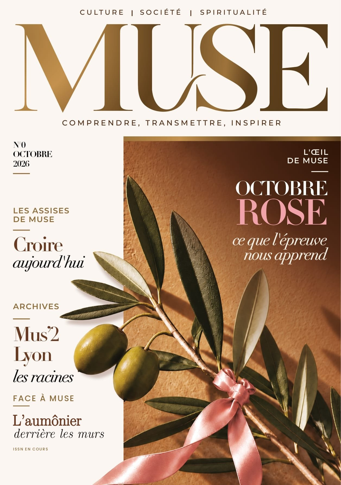
Ouvrir MUSE
L'œil de MUSE
Archives · Mus'2Lyon
Les Assises de MUSE
Muse Vibes
Musers
Ouvrir MUSE
Édito
Au nom de Dieu, en résonance avec les messages prophétiques et en cohérence avec l’Amour du Vivant, nous sommes heureux de vous tendre cet ouvrage. Ou plutôt ce travail abouti minutieusement, lettre par lettre, page à page, pour honorer la transmission, la communication, le Message.
MUSE est l’héritier d’une histoire. Non seulement celle de Mus’2Lyon, mais surtout de cette longue lignée de médias alternatifs, de porte-voix différents. Et cela fait sens avec la multitude de plumes qui se sont jointes à l’aventure. Vous découvrirez au fur et à mesure des numéros, des styles particuliers, reconnaissables, comme un tableau de Picasso ou de Banksy. Vous naviguerez de thème en thème, chaque mois, dans un espace temporel et spatial élargi, de l’ère andalouse aux buildings de Riyadh, de la canopée guyanaise à la cité de la Duchère.
MUSE, c’est une clé mais aussi un récit. C’est une fleur mais aussi un arbre. Et quel arbre ! Un olivier au tronc tortueux, marqué par l’environnement mais toujours prêt à offrir son huile la plus précieuse. Une fleur au parfum délicat, parfois amer, qui rappelle que chaque épreuve, chaque maladie a un sens.
« MUSE, c’est une clé mais aussi un récit. C’est une fleur mais aussi un arbre. »
Octobre Rose, c’est plus qu’une cause. C’est une révolte sage, accompagnée de prières. C’est une voix donnée à la sidération de l’annonce de la maladie. C’est le symbole maternel, rongé, meurtri, qui continue d’élever et de nourrir les âmes. Nous en avons fait notre dossier d’entrée. Au-delà de cette douleur spécifiquement féminine, les hommes doivent comprendre, sensibiliser, parfois accompagner.
Et ce sera ainsi dans chaque numéro à venir. Une composition de profondeur et d’art, de belles lettres et de visuels
inédits et magnifiques. Au-delà du mag, les Mus’ers bâtissent une autre façon de penser.
Si MUSE est un olivier, alors nous en sommes les branches.
Chacune et chacun de nous pousse dans sa direction, avec son tempérament, son parcours, sa sensibilité. Nos plumes ne se contentent pas de se côtoyer : elles se croisent, se répondent, se contredisent parfois. Nous n’avons pas toujours le même avis, et c’est très bien : on peut ne pas être d’accord et continuer à s’écouter. Un désaccord bien mené éclaire souvent davantage qu’un accord de façade. Cette diversité est notre richesse, et nous la voulons visible à chaque numéro. Vous découvrirez chaque plume, une à une, en dernière page, dans « Les branches ».
Mais une branche ne tient que par son tronc. Le nôtre, c’est la mesure, et son alliée, l’exigence : dans la parole, dans le regard que l’on porte sur le monde, dans l’information. À l’heure du trop, nous choisissons le juste. Et le juste demande du travail : chez nous, les mots sont pesés, les sujets traités avec nuance, et nous cherchons l’essentiel plutôt que le bruit.
« À l’heure du trop, nous choisissons le juste. »
MUSE puise dans ce qui l’a précédé pour mieux regarder ce qui vient. Ce numéro 0 n’est qu’une première page. Les suivantes s’écriront aussi avec vous.
Dossier · Octobre Rose
Octobre Rose, ce que l’épreuve nous apprend
Nous pouvons sans aucun doute dire que le cancer est, malheureusement, de plus en plus présent au sein de notre société. Il est désormais courant d’avoir plus d’un membre de notre famille touché par cette maladie. C’est une perturbation qui bouleverse le quotidien à jamais. Presque tout est remis en question. L’hygiène de vie, les relations humaines, le rapport à la médecine ou aux soins, et même certaines de nos pensées vont évoluer. Il y a un avant, un pendant et un après maladie.
Par Assia El Aoudati
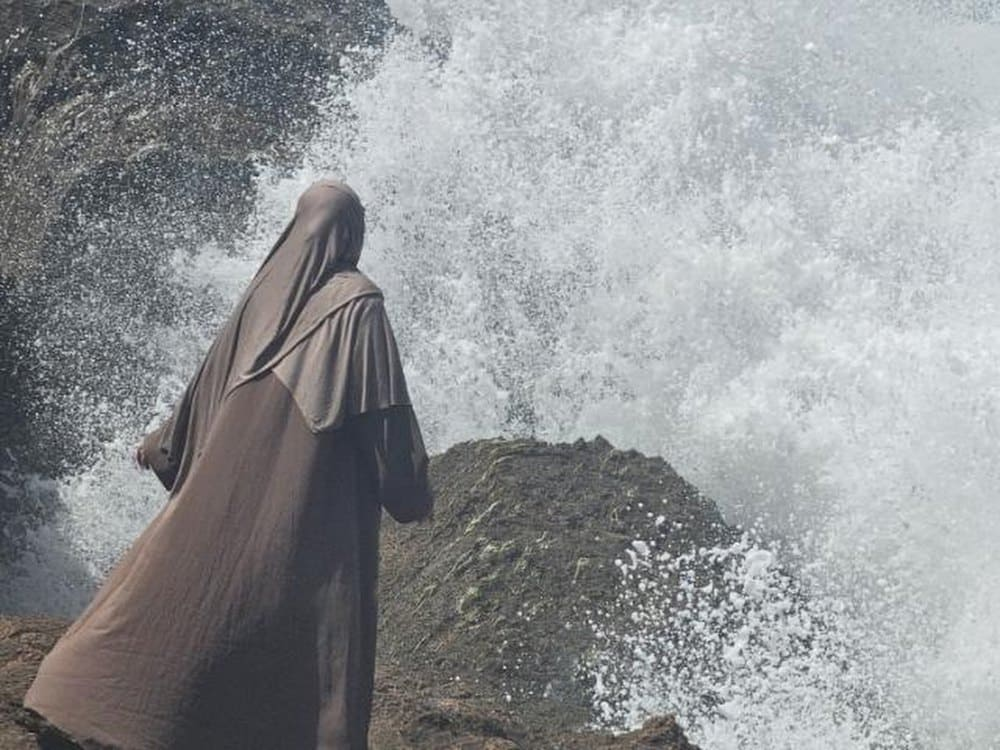
Informations pratiques sur le dépistage
Selon l’Institut national du cancer, le cancer du sein représente environ un tiers des cancers féminins, soit 61 214 nouveaux cas en 2023. Il s’agit de la première cause de décès par cancer chez la femme. Arrivée à la fin des années 90 en France, la campagne de sensibilisation au dépistage précoce du cancer du sein est aujourd’hui connue sous le nom d’« Octobre Rose ». Une initiative permettant d’informer sur l’importance du dépistage et des examens associés. Ce mouvement annuel s’étend à l’international et prend pour symbole un ruban rose que nous retrouvons, durant un mois, dans les points de vente ou lors d’événements solidaires. Un courrier est envoyé tous les deux ans aux femmes de 50 à
74 ans pour un dépistage pris en charge à 100 % par l’Assurance Maladie.
Nous avons recueilli les témoignages d’une soignante, Amel, et d’une patiente, Mbarka, afin de comprendre leur point de vue, d’élargir et d’étayer notre analyse.
Quel est le rôle concret d’une sage-femme libérale dans le suivi gynécologique et le dépistage des cancers féminins ?
Avec les difficultés d’accès aux gynécologues, la sage-femme libérale joue un rôle important dans le suivi gynécologique et la prévention chez les femmes. Nous pouvons les accompagner dès la puberté afin qu’elles puissent mieux comprendre leur corps et ces changements. Nous pouvons ensuite les guider pour des questions de contraception, de santé sexuelle, de suivi gynécologique, de prévention et de dépistage. L’idée est d’avoir un accompagnement qui évolue avec chaque femme, selon son âge, ses besoins et les différentes étapes de sa vie.
Pour le dépistage, nous pouvons réaliser le frottis du col de l’utérus, qui permet de repérer
des anomalies avant qu’elles n’évoluent éventuellement vers un cancer. Nous pouvons examiner les seins et, lorsqu’il y a indication, orienter vers une mammographie ou une échographie mammaire. Notre rôle est aussi d’être à l’écoute, de répondre aux questions et de repérer une anomalie ou un signe qui doit être exploré davantage, afin d’orienter vers le professionnel de santé adapté.
À partir de quel âge et à quelle fréquence recommandez-vous les examens de dépistage ?
Il est important de préciser que ces préconisations concernent les femmes qui ne présentent pas de symptômes. Si une femme constate une anomalie ou un symptôme inhabituel, elle doit consulter sans attendre son prochain dépistage. Chez une femme qui n’a jamais eu de contact sexuel, le risque d’infection par le HPV est très faible. Le dépistage peut être discuté au cas par cas plutôt que d’être réalisé automatiquement. Si un résultat est anormal, le suivi sera adapté avec des examens complémentaires ou une surveillance plus rapprochée.
Qu’est-ce qu’un cancer hormono-dépendant et en quoi cela change-t-il le suivi ou le traitement ?
Certaines cellules utilisent des hormones pour se développer. C’est notamment le cas de certains cancers du sein et de l’endomètre, qui peuvent être sensibles aux œstrogènes et/ou à la progestérone. On dit de la tumeur qu’elle est hormonosensible. Une hormonothérapie peut être proposée pour bloquer l’action des hormones ou diminuer leur production. Elle peut être utilisée après une chirurgie et parfois associée à d’autres traitements.
Le suivi dépend surtout du type et du stade du cancer, de ses caractéristiques biologiques et des traitements reçus. Le caractère hormono-dépendant ne signifie donc pas une surveillance plus fréquente, mais il définira le traitement et sa durée.
Y a-t-il des périodes de la vie hormonale plus à risque à surveiller ?
Les hormones évoluent beaucoup au cours de la vie d’une femme. Certaines périodes peuvent avoir une influence sur le risque de certains cancers, mais cela ne signifie pas qu’il existe une période plus à risque.
Certaines contraceptions ou traitements liés à la ménopause peuvent avoir des effets différents selon le type de traitement et la durée d’utilisation. Ils doivent être discutés avec un professionnel de santé afin de choisir ce qui est le plus adapté à chaque femme.
Quels signes doivent alerter une femme et l’amener à consulter rapidement ?
Il est important d’être à l’écoute de son corps. Certains changements doivent attirer l’attention, surtout lorsqu’ils sont nouveaux, inhabituels ou qu’ils persistent. L’un de ces symptômes ne signifie pas que l’on a un cancer : beaucoup de ces signes peuvent avoir des causes bénignes. L’important est simplement de ne pas les banaliser et de consulter sans attendre.
Le dépistage du cancer du col a beaucoup évolué avec le test HPV. Pouvez-vous expliquer simplement ce changement ?
Avant, on réalisait principalement un frottis avec une analyse des cellules du col de l’utérus, pour rechercher d’éventuelles anomalies. Pendant longtemps, beaucoup de femmes ont pris l’habitude d’en faire chaque année, sans fréquence clairement appliquée, ce qui pouvait être vécu comme une contrainte, voire une source d’anxiété.
Aujourd’hui, le dépistage a évolué avec l’arrivée du test HPV (papillomavirus humain). Ce virus est très fréquent, et certaines souches, lorsqu’elles persistent pendant plusieurs années, peuvent provoquer des lésions du col qui, dans certains cas,
peuvent évoluer vers un cancer. À partir de 30 ans, ce test permet de mieux identifier les femmes qui ont réellement besoin d’une surveillance particulière. Lorsqu’il est négatif, le risque de développer une lésion du col dans les années qui suivent est très faible, ce qui permet d’espacer les dépistages.
Il faut rassurer les femmes : avoir un HPV ne signifie pas avoir un cancer. Dans la majorité des cas, l’organisme élimine naturellement le virus ; c’est surtout sa persistance dans le temps qui peut poser problème.
Recommandez-vous la vaccination HPV, et à quel âge ?
En France, la vaccination est recommandée chez les filles et les garçons à partir de 11 ans (avant le début de la vie sexuelle), car le vaccin est particulièrement efficace pour prévenir une infection par le HPV. Elle peut être proposée en rattrapage jusqu’à 26 ans révolus. Même une femme vaccinée devra continuer à participer au dépistage du cancer du col de l’utérus aux âges recommandés. En tant que sage-femme, mon rôle est surtout d’informer les patientes et les parents sur la vaccination, de répondre à leurs questions et de leur permettre de prendre une décision éclairée avec leur professionnel de santé.
Pourquoi les cancers de l’endomètre et de l’ovaire ne bénéficient-ils pas d’un dépistage systématique, contrairement aux autres cancers hormono-dépendants ?
Parce qu’il n’existe pas de test simple et suffisamment fiable qui permettrait de dépister le cancer de l’endomètre chez des femmes qui n’ont aucun symptôme. Le point important est donc de ne pas banaliser certains signes, en particulier après la ménopause. Un saignement vaginal inhabituel doit amener à consulter, même s’il est peu abondant ou ne se produit qu’une seule fois.
Pour le cancer de l’ovaire, la situation est similaire. Les examens comme l’échographie ou une prise de sang ne permettent pas, à eux seuls, de détecter la maladie chez toutes les femmes sans symptômes. Il peut aussi provoquer des signes assez discrets : ballonnements persistants, douleurs dans le ventre ou le bassin, ventre qui augmente de volume, troubles digestifs ou urinaires inhabituels. Si une femme présente des symptômes ou a un risque particulier, le médecin peut proposer les examens adaptés.
Y a-t-il des idées reçues sur ces cancers que vous aimeriez déconstruire auprès de vos patientes ?
Quels freins concrets observez-vous chez vos patientes (pudeur, mauvaise expérience, appréhension) et comment les abordez-vous ?
Les principaux freins sont souvent liés à une mauvaise expérience antérieure (un examen vécu comme douloureux ou traumatisant peut faire éviter les consultations pendant des années) et à la pudeur, notamment face à un professionnel de santé masculin. Notre façon de réaliser ces examens fait toute la différence : prendre le temps d’expliquer, demander l’accord de la patiente, ne découvrir que ce qui
est utile, et redonner aux femmes le sentiment qu’elles gardent le contrôle. Lorsqu’elles se sentent écoutées et respectées, elles reviennent beaucoup plus facilement pour leur suivi. Ma foi fait partie de qui je suis et guide cette exigence de respect de l’intimité et de la dignité de chaque patiente, quelle que soit son origine ou sa religion.
Est-ce que certaines patientes vous parlent de leur rapport à la foi face à la maladie ? Comment recevez-vous cela en tant que professionnelle ?
Dans ma pratique, nous restons avant tout dans un cadre professionnel. Je respecte donc les convictions de chacune, sans chercher à les influencer. Il arrive que certaines patientes parlent de leur foi lorsqu’elles traversent une maladie ou une épreuve : l’acceptation, le destin, le décret divin, ou simplement le fait que leur foi les aide à traverser cette période. Le rôle du soignant est avant tout d’écouter et de respecter ce que la patiente exprime, sans jugement, en restant pleinement dans notre rôle de professionnel de santé.
Y a-t-il, selon vous, une confusion fréquente chez certaines patientes entre « faire confiance à Allah » et négliger le dépistage ?
Selon moi, cette confusion est liée à un manque d’information plutôt qu’à une opposition entre la foi et la prévention. Lorsqu’elles comprennent à quoi sert le dépistage, je constate qu’elles sont beaucoup plus réceptives. Faire confiance à Allah et prendre soin de sa santé ne sont pas forcément deux choses opposées : pour certaines patientes, la foi peut être une source de soutien tout en leur permettant de faire les démarches médicales nécessaires. Il faut éviter de juger une patiente qui hésite ou qui refuse un dépistage ; il est plus utile de comprendre ce qui se trouve derrière ce refus : une peur, une mauvaise expérience ou un manque d’information.
« Faire confiance à Allah et prendre soin de sa santé ne sont pas forcément deux choses opposées. »Amel, sage-femme
Auriez-vous un message à adresser aux lectrices hésitantes ?
Ne pas avoir peur de prendre soin d’elles. Apprenons à connaître notre corps et à être attentives aux changements inhabituels. Un symptôme qui persiste ou qui inquiète mérite d’être vérifié : consulter ne veut pas dire qu’il y a forcément quelque chose de grave. Au contraire, cela permet parfois de rassurer et, lorsqu’une anomalie est présente, de la prendre en charge le plus tôt possible. Pour celles qui ont vécu une mauvaise expérience, n’hésitez pas à chercher un professionnel avec lequel vous vous sentez en confiance, qui vous écoute et respecte votre pudeur et vos limites.
Pour conclure cette entrevue, l’objectif d’un soignant préventif est de rassurer la patiente afin de permettre une prise en charge rapide dès qu’une anomalie est détectée. L’essentiel est d’avoir un suivi adapté à l’âge, aux antécédents et à la situation, et de consulter au moindre changement inhabituel. Le témoignage suivant apporte une dimension plus personnelle au rapport à la maladie.
Pouvez-vous vous présenter et raconter la découverte de la maladie ?
Je m’appelle Mbarka. Mariée, trois enfants, je suis assistante maternelle depuis 20 ans et je fais partie de trois associations. J’ai découvert la maladie en faisant une autopalpation et j’ai constaté une grosseur. J’ai tout de suite pris rendez-vous avec ma généraliste, qui m’a directement orientée et prescrit les examens à faire.
Quelle a été votre première réaction à l’annonce du diagnostic ?
Choquée. Je m’y attendais, parce que j’avais déjà fait beaucoup d’examens. Mais j’ai quand même été très choquée. J’ai eu l’impression de me dédoubler, comme si j’étais spectatrice de ma propre vie. Mais je me suis tout de suite reprise.
Comment l’avez-vous annoncé à vos proches, et comment l’ont-ils vécu ?
Après l’annonce du diagnostic, je suis sortie du cabinet médical et j’ai tout de suite appelé mon mari pour lui dire. Il a quitté son travail, on s’est retrouvés à la maison, on en a discuté et on a décidé de le dire tout de suite aux enfants, le soir même. J’ai deux filles et un garçon, et le plus choqué, bizarrement, c’était mon fils. Il était dans le déni total, et ça a duré un moment, jusqu’au début des soins.
Qu’est-ce qui a été le plus dur, physiquement et moralement ?
C’était les consultations régulières du traitement. J’ai eu la chance de n’avoir qu’un seul bloc de chimio, mais la contrainte, c’était les rendez-vous quotidiens, car j’étais sous radiothérapie pendant 18 mois : des rendez-vous très épuisants physiquement.
Moralement, alhamdoulillah, j’étais dans l’acceptation, mais je ne voulais pas que mon entourage ait à bousculer son quotidien pour moi. À mes parents, je l’ai caché le plus
longtemps possible. Mes enfants subissaient ma maladie quotidiennement ; on arrivait à en parler, car on parlait déjà des grandes maladies et de la mort ouvertement à la maison. Ce qui me touchait le plus, c’était de voir mon entourage triste.
Qu’aimeriez-vous dire aux soignants et à l’entourage des malades ?
Aux soignants, j’aimerais dire d’être un peu plus à l’écoute de nos demandes non dites. À chaque rendez-vous, quand on me demandait comment j’allais, je répondais « oui, ça va », mais en fait, non ! Je pense qu’il faudrait un peu plus de formation psychologique du côté des soignants, même si je sais que ce n’est pas facile pour eux. J’avais besoin qu’ils soient un peu plus intuitifs, qu’ils sachent interpréter les réponses. J’avais l’habitude de toujours dire que ça allait bien, alors que non, pas du tout. Mais quelque part, j’avais envie qu’on le devine.
« Quand on me demandait comment j’allais, je répondais “oui, ça va”, mais en fait, non ! »Mbarka
À l’entourage, c’est très compliqué de donner des conseils : je refusais de leur imposer ma maladie. Ce qui m’a le plus bouleversée, c’est d’avoir vu ma mère s’effondrer, plus que l’annonce du diagnostic elle-même. Et mon père, qui m’a toujours connue forte, comme si un mur porteur se fissurait.
Quel message pour les femmes qui hésitent à se faire diagnostiquer ?
Ne pas hésiter. Dès que l’on sent quelque chose d’anormal, il ne faut pas attendre. Parce qu’avec ce cancer, comme presque tous, on ne sent rien, aucune douleur : quand les douleurs arrivent, c’est souvent déjà bien avancé. Je conseillerais de consulter régulièrement et de pratiquer l’autopalpation.
Comment votre rapport à la foi a-t-il évolué pendant l’épreuve ? Qu’est-ce qu’elle vous a appris sur vous-même, sur la patience et sur le sens de la vie ? Et quel conseil spirituel donneriez-vous à une femme qui vient d’apprendre son diagnostic ?
Mon rapport à la foi a fortement évolué pendant et après. Avant, j’étais pratiquante dans la pratique, mais ensuite j’ai commencé à approfondir ma religion, plus dans le sens spirituel : je continue d’apprendre, de me parfaire, d’alimenter ma foi. Je n’ai eu aucun doute, j’étais prête même à vivre pire. Je n’ai pas traversé tout ça sans douleur, mais comparé à d’autres, je trouve que j’ai été facilitée : ma prise en charge a été rapide, je n’ai pas eu de complications, je remercie Allah pour ça.
Ça m’a appris la sagesse, et que j’étais plus forte que je ne le croyais. Que la vie est sacrée et éphémère. J’ai appris à m’en remettre davantage à Allah pour les décisions que je devais prendre, pour ce que je ne pouvais pas contrôler. Je ne peux pas dire que ça m’a
transformée, mais ça m’a fait grandir : ça a renforcé mon idée que rien n’est acquis. C’est là que j’ai fait mon premier testament.
Le seul conseil que je pourrais donner, c’est d’accepter. Être dans l’acceptation, c’est une épreuve très très difficile, mais être dans le déni, la révolte, ça ne sert à rien. Alhamdoulillah, c’est une épreuve que Allah nous envoie, et il faut l’accepter en tant qu’épreuve. Seul Allah sait ce qui nous attend ; notre foi, c’est ce qui nous aide, elle aide énormément. D’ailleurs, suite à mes séances de radiothérapie, j’ai reçu « une invitation d’Allah » pour aller effectuer mon pèlerinage. Je sortais tout juste d’une grosse épreuve, et Allah nous a facilité, à mon mari et à moi, physiquement et financièrement, ce grand voyage.
Le récit de Mbarka dit, en creux, ce que traverse en silence toute femme confrontée à la maladie : un corps qui change, une identité qui vacille.
Renversement de la féminité dû à la maladie
À l’annonce même du diagnostic, le malade entrevoit déjà une partie de ce qui l’attend. Il anticipe déjà, comme pour se préparer, comme pour se donner du courage. Lorsqu’une personne entend le mot « cancer », cela lui évoque tout un parcours, tout un combat. On dit que les cheveux d’une femme sont un ornement : peu importe comment elle décide de les coiffer, ils disent quelque chose de son identité. Quand une femme commence ses séances de traitement, elle sait qu’elle y abandonne plus qu’une chevelure, que sa féminité va être ébranlée. Pour certaines femmes atteintes du cancer du sein, c’est une asymétrie du corps qui les marque à vie.
L’expérience de la maladie est aussi difficile sur le plan physique que psychologique. L’altération de l’image corporelle a un impact direct sur l’estime de soi : le reflet dans le miroir ne renvoie plus à l’identité de la personne. Alors que le rapport à soi change, le rapport aux autres aussi évolue. Dans une société où l’apparence et la séduction sont mises en avant pour représenter les femmes, un sentiment de dévalorisation et une difficulté à s’exposer au monde sont des obstacles supplémentaires au parcours de la maladie.
Épreuve universelle, la maladie reste une expérience propre à chacun. Pour la surmonter, la dimension spirituelle joue un rôle primordial dans le processus de guérison de nombreuses personnes : elle apaise l’esprit en permettant d’y trouver du réconfort et la force de surmonter l’épreuve.
La place de la foi dans l’épreuve de la maladie
Être touché par la maladie, quelle qu’elle soit, est une forme d’amour de Notre Seigneur. Elle nous permet de prendre conscience des bienfaits du quotidien et du caractère éphémère de toute chose. Par ailleurs, le Messager d’Allah a dit que Dieu éprouve celui auquel Il veut du bien. L’épreuve de la maladie nous permet également d’absoudre nos péchés et de nous rapprocher de Lui. Nous espérons, ainsi, obtenir l’agrément d’Allah par la patience et le repentir. Notre Prophète bien-aimé a aussi dit qu’il n’y a pas une fatigue, une maladie, un souci, une peine, un préjudice ni une affliction qui touchent le musulman, jusqu’à l’épine qui le blesse, sans que Dieu lui efface une partie de ses péchés.
Les histoires de nombreux personnages du paysage historique islamique attestent de cette endurance qu’est la patience. Pour ne citer que lui, notre prophète Job (Ayyoub) est très souvent évoqué pour la patience dont lui et son épouse ont fait preuve, et la récompense que le Créateur leur a accordée par la suite. Et Allah dit dans la sourate Les Groupes que ceux qui font montre de constance recevront l’intégralité de
leur rétribution sans qu’il leur soit demandé de comptes.
« L’islam n’enseigne pas la fatalité. »
Lorsqu’une personne apprend qu’elle est malade, une partie d’elle la renvoie à la dimension de la mort : un rappel direct au caractère passager de notre présence dans cette vie. La foi permet de garder espoir en un avenir meilleur. Cependant, de nombreuses personnes de la communauté musulmane confondent patience et passivité : l’islam n’enseigne pas la fatalité. Il est important de multiplier les causes, même si nous savons que le décret d’Allah le Très-Haut est déjà annoncé : entamer une démarche de soin, changer ses habitudes de vie, etc. Ces causes ne sont pas incompatibles avec la confiance que nous Lui accordons. Il est de notre responsabilité, en tant que musulman, de préserver cette amana (dépôt).
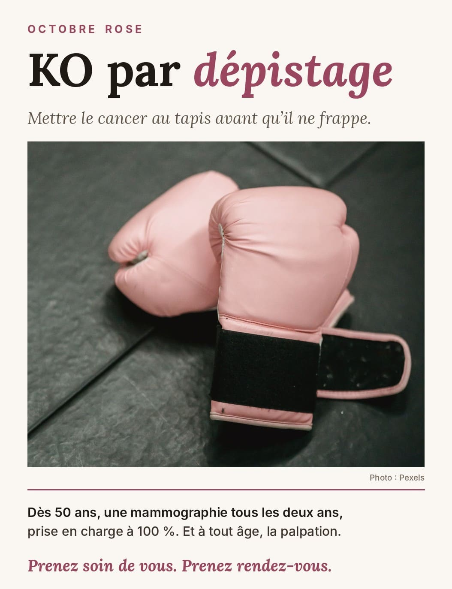
Politique
La politique, ça nous regarde
Comprendre plutôt que commenter : institutions, citoyens et grandes familles politiques à l’approche de 2027
Par Hajar Bouslam Iyoub
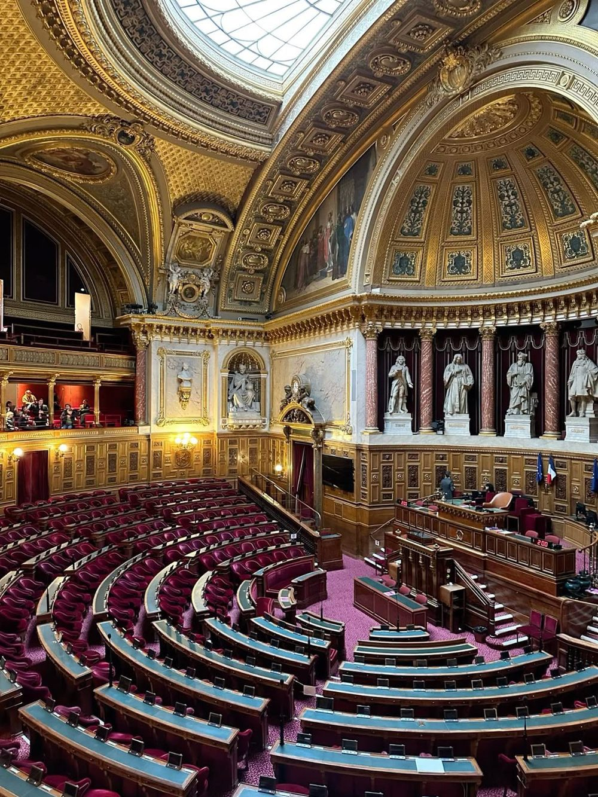
Il est dans l’habitude du citoyen français de réagir aux allégations politiques, diffusées dans les médias de manière anecdotique, lorsqu’il croise une connaissance à la boulangerie ou en attendant le train à la gare. Mais la politique n’est pas un film ou une série dont on commenterait simplement les rebondissements selon ses convictions et son expérience.
La politique gouverne notre pays et nos territoires.
La politique décide de la manière dont notre société s’organise.
La politique influence nos conditions de vie d’aujourd’hui et de demain.
Nos droits, les horaires de bus, les menus des cantines scolaires, la construction d’un nouveau cinéma. Tout cela est rattaché à des choix politiques, et tout cela touche directement le citoyen. Nous sommes donc tous concernés par la politique.
« La politique n’est pas un film ou une série dont on commenterait simplement les rebondissements. »
Comment comprendre la politique française d’aujourd’hui ?
Structure du système politique : les grandes lignes
La France fonctionne avec plusieurs échelons territoriaux : l’État, les régions, les départements et les communes. La politique s’exerce à chacun de ces échelons, avec des acteurs et des responsabilités différents.
Tout d’abord, l’État agit à l’échelle nationale. Il intervient notamment en matière de santé, de sécurité, d’éducation, de fiscalité ou encore d’environnement. L’État est composé de trois grands pouvoirs distincts.
Le pouvoir exécutif, composé du président de la République et du Gouvernement, est chargé de fixer les objectifs nationaux à atteindre, de conduire et d’organiser la Nation.
Le pouvoir législatif, assuré par le Parlement, vote les lois et contrôle l’action du pouvoir exécutif.
Et enfin, l’autorité judiciaire est assurée par les tribunaux, chargés de faire respecter le droit et de rendre la justice.
Ensuite, la région constitue à la fois un territoire d’action de l’État, représenté par le préfet, et une collectivité territoriale autonome, administrée par des élus régionaux. La région intervient sur un territoire plus vaste et se concentre notamment sur le développement économique, l’aménagement du territoire, les transports régionaux, les lycées et la formation professionnelle.
Le département, quant à lui, joue un rôle particulièrement important dans les politiques de solidarité et d’action sociale. Il intervient notamment dans la protection de l’enfance, l’aide aux personnes âgées ou handicapées, le RSA, mais aussi dans la gestion des collèges et des routes départementales.
Enfin, la commune est l’échelon le plus proche du citoyen. Elle est administrée par le maire et le conseil municipal. Elle intervient directement dans la vie quotidienne : écoles maternelles et élémentaires, urbanisme local, état civil, équipements municipaux ou encore certains services de proximité.
Rôle et place du citoyen
Le citoyen joue un rôle central dans une démocratie telle que la France. Il participe à l’élection du président de la République et des députés mais il élit également les représentants des collectivités territoriales, c’est-à-dire les conseillers régionaux, conseillers départementaux et conseillers municipaux.
Son rôle ne s’arrête pas au vote. Il peut
s’informer, participer au débat public, interpeller ses élus, rejoindre une association ou un parti, manifester, signer une pétition ou encore participer à une consultation citoyenne.
Comprendre la politique, c’est donc également comprendre où et comment le citoyen peut agir.
« Comprendre la politique, c’est comprendre où et comment le citoyen peut agir. »
Société d’aujourd’hui : état des lieux et aspirations
Ces différentes attitudes témoignent d’un paysage électoral diversifié, à l’image de la population française. Face à cette diversité d’attentes et de préoccupations, les partis politiques proposent des réponses différentes, qui s’inscrivent dans plusieurs grandes familles politiques.
À gauche, des partis comme La France insoumise ou le Parti socialiste mettent notamment l’accent sur la réduction des inégalités et la protection sociale.
Les Écologistes placent la transition environnementale au centre de leur programme.
Le centre macroniste accorde une grande importance à l’Europe et défend une économie favorisant l’investissement.
La droite met davantage l’accent sur le travail, la maîtrise des dépenses publiques et l’autorité.
Enfin, à l’extrême droite, le Rassemblement national place l’immigration, la sécurité et la priorité nationale au cœur de son projet.
Ces résumés ne remplacent évidemment pas la lecture des programmes dans lesquels chaque parti apporte des réponses différentes à de nombreux sujets.
À l’approche de l’élection présidentielle de 2027, une nouvelle question se pose. Quelles réponses les différents partis politiques proposent-ils aux difficultés et aux aspirations des Français ?
L’élection d’Emmanuel Macron en 2017 avait profondément bouleversé le paysage politique traditionnel. Ses deux mandats ont été marqués par des réformes économiques et sociales, mais également par la succession de crises : Gilets jaunes, Covid-19, inflation, dissolution de l’Assemblée nationale en 2024.
Dix ans plus tard, la France s’apprête à tourner la page. Mais pour écrire la suivante, encore faut-il comprendre les choix qui s’offrent à elle. Comprendre les institutions. Comprendre les programmes. Vérifier les affirmations. Comparer les solutions.
À chacun, ensuite, de confronter les discours aux faits, de consulter les programmes et de se forger sa propre opinion.
Comprendre, plutôt que simplement commenter.
Reportage · Écho de Palestine
Vaulx-en-Velin, une ville résiliente et solidaire
Du vendredi 2 au samedi 3 octobre 2026, la ville de Vaulx-en-Velin a vécu au rythme de la solidarité avec le peuple palestinien. À l’occasion de la visite officielle de sa ville jumelle Beit Sahour, la municipalité a organisé l’événement « Écho de Palestine », point d’orgue d’un week-end riche en émotions, en réflexions et en actes concrets. Derrière ces trois journées d’exception se cache une histoire plus longue : celle d’une ville populaire, ouvrière et résiliente, qui a fait de la solidarité internationale la colonne vertébrale de son identité.
Par Iness El Jebbari
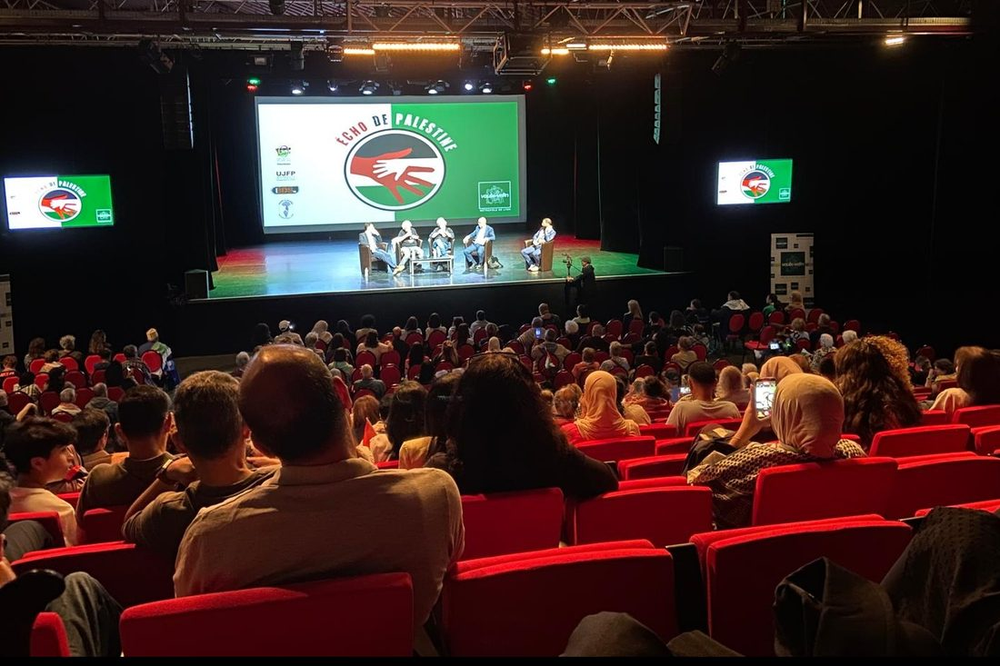
Une ville qui n’a jamais baissé les yeux
Vaulx-en-Velin n’est pas une ville comme les autres. Terre d’immigration séculaire, centre industriel de premier plan depuis un siècle, commune ouvrière s’il en est, elle a construit son identité dans les luttes et les combats pour
la dignité. Comme l’a rappelé Abdelkader Lahmar lors de son discours de clôture : « On sait ce que la colonisation veut dire ici à Vaulx-en-Velin. On le sait, parce qu’on en vient. »
« On sait ce que la colonisation veut dire ici à Vaulx-en-Velin. On le sait, parce qu’on en vient. »Abdelkader Lahmar, maire de Vaulx-en-Velin
Le jumelage avec Beit Sahour, d’abord pacte d’amitié signé en 2008 sous le mandat de Maurice Charrier, puis transformé en jumelage officiel par une délibération du 6 février 2025, s’inscrit dans une longue tradition de coopération internationale : financement du musée de Sébaco en 2004, don d’un camion-benne à la ville d’Artik en Arménie en 2022, organisation du festival Résonance Palestine en juillet 2026.
« Depuis plusieurs décennies, Vaulx-en-Velin conduit une politique publique volontariste de coopération internationale », a souligné Chafik Filali, conseiller municipal délégué à la Solidarité internationale et aux Jumelages.
Un accueil officiel et des gestes symboliques forts
Vendredi 2 octobre, le drapeau palestinien a été hissé devant l’Hôtel de Ville. Le maire Abdelkader Lahmar et son équipe municipale ont accueilli la délégation de Beit Sahour, menée par son maire Laith Hazim Qumsiyeh, élu au printemps 2026. Étaient également présents Maurice Charrier, maire honoraire, Chafik Filali, ainsi que René Dufour, consul honoraire du Nicaragua à Lyon.
La journée s’est poursuivie par la visite de l’Atelier Léonard-de-Vinci et du Planétarium, où le maire de Beit Sahour a rencontré les associations de jeunesse, avant une réunion de travail et une prise de parole devant le Conseil municipal.
Le samedi matin, la délégation a participé à l’inauguration des rues de Beit Sahour et de Sébaco. Un olivier a été planté dans le jardin de la Grappinière, « symbole de paix et d’amitié entre les trois communes ». Ces gestes permettent « d’ancrer durablement ces relations de partage et d’entraide dans l’espace public vaudais », a souligné Chafik Filali.
Le Conseil municipal du 2 octobre : une citoyenneté d’honneur dans une ambiance tendue
Les élus ont adopté une délibération attribuant la citoyenneté d’honneur à Francesca Albanese, rapporteuse spéciale de l’ONU sur les territoires palestiniens occupés. Une distinction « exclusivement honorifique et symbolique » qui salue le courage d’une juriste cible de « campagnes de disqualification, de tentatives d’intimidation et de représailles ».
La séance a toutefois été marquée par de vifs échanges. Ange Vidal, du groupe Vaulx-en-Velin unie, a estimé que le jumelage « risque aujourd’hui d’être détourné pour devenir un outil de propagande ». Le maire a répondu : « Dénoncer un génocide n’est pas de la propagande ! ».
Tout au long de la soirée : restauration traditionnelle assurée par Saveurs de Palestine.
Les voix de la solidarité
Jérôme Faynel (Collectif 69 Palestine)
« Nous sommes des milliers en France, des millions à travers le monde. Trois ans de mobilisation, trois ans de colère, trois ans de solidarité, trois ans d’espoir aussi. L’histoire n’est jamais écrite définitivement. Alors ne baissons pas les yeux. Ne nous taisons pas. Ne nous habituons pas. Continuons à dire, à comprendre, à agir pour les droits du peuple palestinien. »
Laith Hazim Qumsiyeh (maire de Beit Sahour)
« Nous traversons des circonstances extrêmement difficiles. À Gaza, la majorité de la population vit dans des conditions de déplacement forcé. En Cisjordanie, les démolitions, les violences des colons et les restrictions à la liberté de circulation se poursuivent. Mais le peuple palestinien n’a pas permis à ces conditions de détruire son identité. Il continue de construire, d’apprendre, de préserver sa culture et sa tradition. »
Abdelkader Lahmar (maire de Vaulx-en-Velin)
« Les villes ont un rôle à jouer pour préserver l’humilité du monde. Cette lutte pour les méfaits de la colonisation, nous la portons en nous depuis toujours. Je me souviens en 1983, lors de la marche des Beurs, les délégués portaient déjà le keffieh. Ce keffieh, ça a toujours été un savoir universel de résistance à l’oppression. Vive la justice, l’égalité, l’amitié, la solidarité, la Palestine. »
La diplomatie des villes : un levier stratégique
Dans son intervention, Jérôme Faynel a détaillé les leviers d’action mis en œuvre par le Collectif 69 Palestine : coopération décentralisée, marchés publics éthiques, soutien au secteur associatif, diplomatie des villes, diplomatie culturelle, diplomatie de proximité, éducation et sensibilisation, gestes symboliques.
« Quand une seule ville parle, on l’écoute à moitié. Quand cent villes parlent d’une seule voix, on ne peut plus les ignorer », a-t-il rappelé.
« Quand une seule ville parle, on l’écoute à moitié. Quand cent villes parlent d’une seule voix, on ne peut plus les ignorer. »Jérôme Faynel, Collectif 69 Palestine
Beit Sahour : une ville de résilience
Le maire de Beit Sahour a dressé un tableau saisissant de la situation de sa ville, jumelée avec Vaulx-en-Velin depuis 2008 et officiellement depuis février 2025. « La ville fait face à des restrictions qui affectent la vie de ses habitants. Les décisions prises en 2026 concernant la confiscation de terres aux alentours ont suscité des inquiétudes. L’économie a été fortement affectée par le recul du tourisme. »
Il a évoqué le projet commun d’espace vert, soutenu par le ministère français des Affaires étrangères, aujourd’hui compromis car « le terrain, situé en face d’une colonie, a été saisi par l’armée israélienne ».
Malgré cela, il a lancé un appel : « Venez nous rendre visite. Visitez une ville, marchez dans ses rues, découvrez son histoire et sa
culture. Vous verrez la Palestine que nous connaissons : une Palestine qui porte une histoire millénaire, une culture vivante, et un peuple qui regarde vers un avenir meilleur. »
Un rassemblement qui a réuni des milliers de personnes
Le samedi 10 octobre 2026, à Lyon, un rassemblement s’est tenu au départ de la place Jean-Macé. Des milliers de personnes y ont participé pour dire non aux trois ans du génocide à Gaza. Une mobilisation qui a témoigné de la vitalité et de la détermination du mouvement de solidarité avec le peuple palestinien.
Vaulx-en-Velin, ville solidaire : une histoire qui ne date pas d’hier
À travers cet événement, Vaulx-en-Velin confirme son engagement aux côtés du peuple palestinien. Cet engagement n’est pas une posture récente. Il s’inscrit dans une histoire longue, celle d’une ville qui a toujours su se tenir aux côtés des opprimés, des déplacés, des oubliés.
Comme l’a souligné Abdelkader Lahmar : « Défendre la justice, la dignité humaine, la paix, ce n’est pas de la propagande. C’est un devoir. »
Le jumelage entre Vaulx-en-Velin et Beit Sahour se traduit par des projets concrets : études pour un espace vert, échanges de jeunes, festivals culturels, actions de sensibilisation. « Le pont entre Vaulx-en-Velin et Beit Sahour restera toujours ouvert », a promis le maire.
Cette ville, qui a vu passer tant de luttes et de combats pour la dignité, reste fidèle à elle-même. Résiliente, solidaire, engagée. Une ville qui n’a jamais baissé les yeux, et qui ne les baissera pas.
De Beit Sahour à Vaulx-en-Velin, de la Palestine à la France, la solidarité continue. Et elle n’est pas près de s’arrêter.
Climat · Canicule
Quand la chaleur nous oblige à ralentir
Été 2026 — Ce que les vagues de chaleur disent de notre climat, de nos villes… et de nous-mêmes
Par Houda El Mahtat
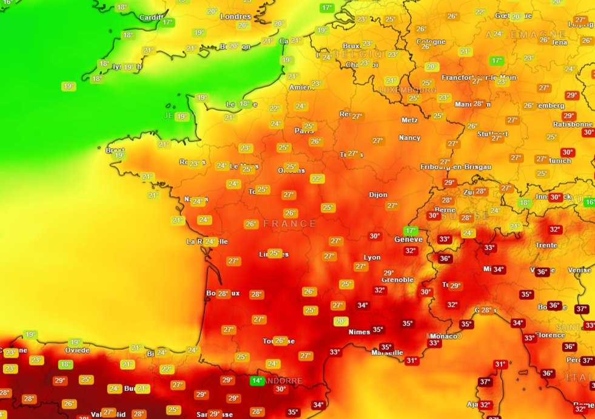
Il y a des étés que l’on garde en mémoire pour les vacances, les rencontres, les longues soirées et les baignades.
Et puis il y a ceux dont on se souvient à travers un chiffre.
Un record. Une nuit où l’on ne dort plus. Une carte de vigilance orange ou rouge. Un incendie que l’on regarde avancer derrière un écran.
L’été 2026 aura placé la chaleur au cœur de notre quotidien. Avec plusieurs épisodes successifs, dont une vague particulièrement intense en juin, puis d’autres en juillet, la France aura connu un été marqué par une succession inhabituelle de fortes chaleurs.
Mais derrière les températures et les cartes colorées, une question demeure : sommes-nous simplement confrontés à un climat qui change, ou devons-nous aussi apprendre à vivre autrement avec lui ?
Pic, vague de chaleur, canicule : pourquoi ces mots comptent-ils ?
Nous parlons souvent de « canicule » dès que le thermomètre grimpe. Pourtant, ces phénomènes ne sont pas identiques.
Un pic de chaleur correspond à une période courte durant laquelle les températures sont particulièrement élevées. Une vague de chaleur répond à des critères climatologiques précis. La canicule désigne une situation de forte chaleur présentant un risque sanitaire important et faisant l’objet d’une vigilance spécifique.
Ces distinctions peuvent sembler techniques. Elles rappellent pourtant une chose essentielle : la chaleur n’est pas seulement une température. C’est une durée, une exposition, un risque et une capacité à y faire face.
« La chaleur n’est pas seulement une température. C’est une durée, une exposition, un risque et une capacité à y faire face. »
1947 : quand les chiffres racontent une histoire
Météo-France recense les vagues de chaleur à l’échelle nationale depuis 1947. Depuis cette date, 54 ont été recensées. Environ la moitié ont eu lieu avant 2010, sur près de soixante ans ; l’autre moitié depuis 2010, en une quinzaine d’années.
L’été 2026 est venu ajouter plusieurs épisodes : une première vague du 17 au 30 juin, une deuxième du 4 au 19 juillet et une troisième à partir de la fin juillet.
Le mois de juin a particulièrement marqué les esprits. Météo-France l’a classé comme le mois de juin le plus chaud jamais enregistré en France, avec une température moyenne supérieure de 3,8 °C à la normale 1991-2020. Le 25 juin, 72 départements ont été placés en vigilance rouge canicule, un niveau jamais atteint depuis la création du dispositif en 2004.
Puis juillet a prolongé la séquence : sa deuxième vague de chaleur a duré seize jours, avec, au plus fort de l’épisode, 37 départements en vigilance rouge et 46 en orange.
Ce qui frappe, ce ne sont donc pas seulement les records, mais leur enchaînement.
Est-ce seulement le climat qui change ?
Les connaissances scientifiques sont claires : le changement climatique d’origine humaine augmente la probabilité et l’intensité des vagues de chaleur.
Il ne signifie pas que chaque journée chaude est directement « causée » par lui, mais que le terrain sur lequel surviennent ces épisodes s’est réchauffé : les températures de départ sont plus élevées et les épisodes peuvent devenir plus fréquents, commencer plus tôt ou se prolonger plus tard.
Mais une autre question apparaît alors :
Et nous, avons-nous changé ?
Une même température ne signifie pas la même chose pour tout le monde.
Une personne qui vit dans une maison entourée d’arbres ne connaît pas la même chaleur que celle qui habite sous les toits d’un immeuble au cœur d’une ville. Un salarié qui travaille dehors n’est pas exposé comme celui qui travaille dans un local climatisé. Une personne âgée isolée, un enfant ou quelqu’un qui ne dispose pas d’un logement suffisamment frais ne vivent pas la chaleur de la même manière.
La chaleur révèle ainsi nos inégalités, notre architecture et nos choix de société : des villes très minérales, des logements parfois mal adaptés, notre dépendance à la climatisation, nos horaires de travail et notre rapport à l’eau.
Quand la chaleur rencontre le feu
Lorsqu’elle s’accompagne d’un manque durable de pluie, la chaleur assèche les sols et la végétation, augmentant le risque d’incendie.
À la fin du mois de juin, Météo-France signalait déjà une sécheresse généralisée sur l’Hexagone et la Corse.
Les phénomènes naturels ne vivent pas chacun dans leur petite case : la chaleur agit sur les sols, les sols secs fragilisent la végétation et la végétation sèche favorise la propagation du feu.
Mais la responsabilité humaine demeure : une cigarette, un barbecue, une étincelle ou une activité mal maîtrisée peuvent transformer un risque en catastrophe.
S’adapter… ou changer ?
Nous parlons beaucoup d’adaptation : adapter les villes, les logements, les horaires de travail, les transports, les espaces verts, les systèmes de santé et nos comportements.
Mais jusqu’où pouvons-nous adapter notre environnement sans interroger notre manière de vivre ?
Peut-on simplement climatiser davantage et consommer davantage d’énergie pour continuer exactement comme avant ? Ou faut-il parfois accepter de modifier nos habitudes ?
La véritable adaptation commence peut-être lorsque nous cessons de considérer l’environnement comme quelque chose que nous pouvons toujours corriger pour qu’il corresponde à notre rythme.
Et si ce n’était qu’un rappel à l’ordre ?
Il y a quelque chose d’étrangement révélateur dans une canicule.
Elle nous impose une limite.
Nous ralentissons. Nous cherchons l’ombre. Nous buvons. Nous reportons certaines activités. Nous ouvrons les fenêtres la nuit et fermons les volets le jour. Nous attendons.
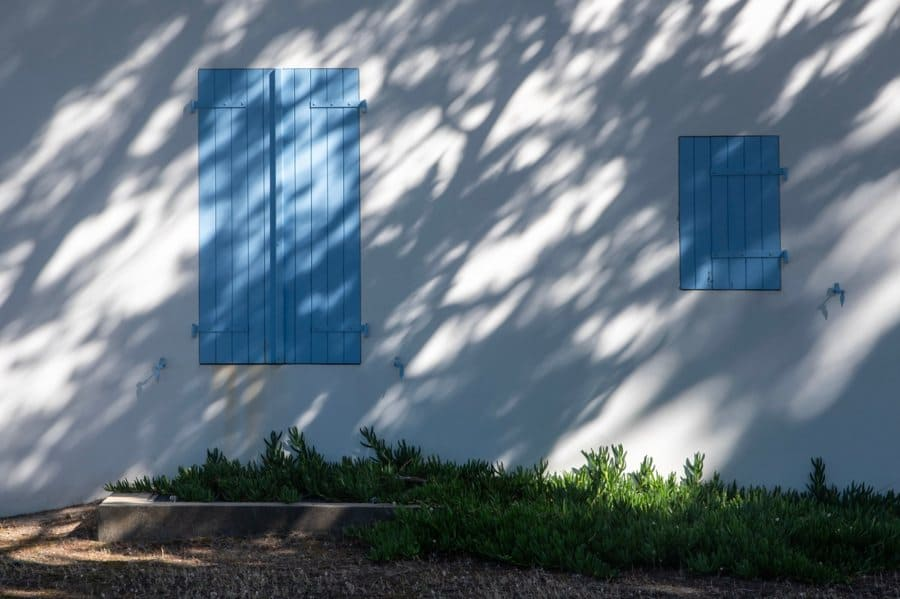
Pendant quelques heures, le soleil décide du rythme de nos journées.
Dans un monde où tout semble devoir aller vite, la chaleur nous rappelle une chose que nous oublions facilement : nous avons un corps, et ce corps a des limites.
« Nous avons un corps, et ce corps a des limites. »
Nous pouvons produire plus vite, répondre plus vite, nous déplacer plus vite. Il existe pourtant des réalités auxquelles nous ne pouvons pas imposer notre rythme.
La chaleur en est une.
Elle nous oblige à nous arrêter.
Peut-être même à regarder.
Notre manière de construire et de consommer. Ceux qui souffrent davantage lorsque les températures montent. Notre dépendance à un environnement que nous croyons parfois pouvoir maîtriser.
Il y a une forme d’humilité dans le fait de reconnaître que nous dépendons de l’eau, de l’air, des sols, des arbres, des saisons et de l’équilibre fragile du vivant.
Nous pouvons nous protéger. Nous pouvons nous adapter.
Mais nous ne pouvons pas tout maîtriser.
Après la chaleur, les températures redescendront. Les vigilances changeront. Les incendies finiront par s’éteindre. Nous reprendrons nos habitudes.
C’est peut-être précisément à ce moment-là que la vraie question commencera :
Qu’allons-nous faire de ce que nous avons appris ?
Une canicule n’est pas seulement un épisode météorologique. Elle peut devenir un rappel de nos limites, de nos responsabilités et de notre interdépendance.
Nous ne sommes pas séparés de la nature au point de pouvoir vivre comme si elle n’existait pas.
Parfois, elle nous laisse avancer à notre rythme.
Et parfois, elle nous demande de ralentir.
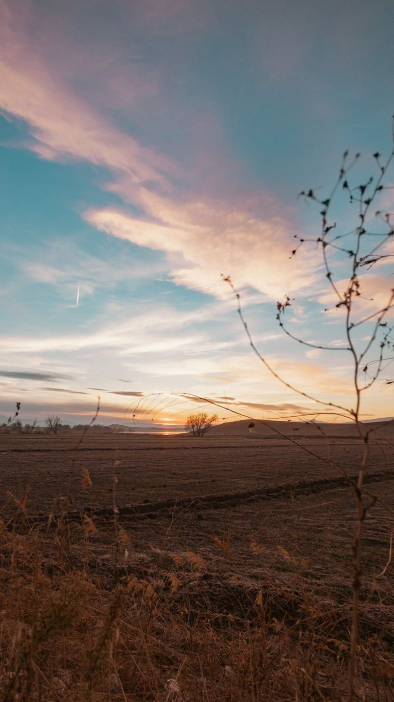
Photo : Pexels
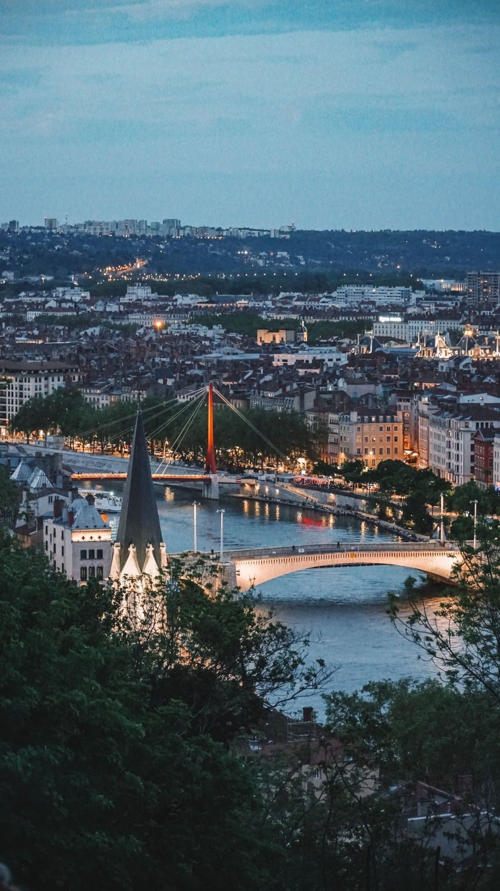
Les archives de Mus’2Lyon
D’où nous venons
Avant MUSE, il y avait Mus’2Lyon. Ses pages ont parlé de foi, de société, d’engagement et de vie quotidienne, avec une conviction qui nous anime toujours : on peut réfléchir ensemble sans se ressembler.
Certains de ces textes ont été écrits il y a des années. Nous les avons relus et choisis parce qu’ils n’ont pas pris une ride : ils parlent encore de nous, de nos doutes, de nos combats et de nos espérances.
Les voici dans la mise en page de MUSE, mais avec leurs mots d’origine. Un fleuve ne renie pas sa source : c’est d’elle qu’il tient sa force.
Houda El Mahtat
Lyon, la Saône à la tombée du jour. Photo : Esra Geziyor / Pexels.
Archives · Mus’2Lyon
Minute de sens : le ring de la vie
Par Hamza Braïki
Paru dans Mus’2Lyon, n°1, octobre 2013
Le poing bien fermé se dressera vers le ciel,
Le cœur libéré résiste aux tempêtes de grêle.
Dès les premiers cris, l’homme entrevoit le rude combat qui l’attend sur cette terre, cette lutte continue sublimée par Dieu : « Nous avons certes créé l’homme pour une vie de lutte » (s. 90, v. 4). Le croyant adopte alors l’attitude du combattant et enfile les gants. L’index du témoignage se couvre du bandage de l’intention, en garde haute. La soif de vaincre et le regard vif, il s’exerce sans cesse : renforcer son cardio par le dhikr (rappel), travailler sa posture par la lecture, allonger ses séances de corde par le Coran, Corde divine, et affermir son jeu de jambes en multipliant les prières.
Mais pour travailler le foncier et la vivacité, rien de tel qu’un coach aguerri, au palmarès étoffé, modèle de pédagogie : le Prophète-coach, Muhammad. Il t’entraînera dur pour faire de toi un champion. Il te transmettra les règles et l’intuition, la sagesse et l’ambition. Il t’enseignera la force de ‘Ali, la ténacité de ‘Umar, l’intelligence de ‘Uthman, le tout enrobé par la clémence d’Abu Bakr. Après une telle formation, tu seras digne de l’œil du tigre et du poing d’acier, doté d’une large poitrine et d’un cœur gros comme ça !
C’est le gong du match : te voilà fin prêt pour le combat de ta vie. Bien sur tes appuis, tu gardes ta garde et observes l’adversaire. Ton coach te l’a dit : il saute comme un diable, il est tenace et a plus d’un tour dans son sac. Tu te concentres et cherches la faille et l’angle d’attaque. Le premier coup vient de lui : ta première épreuve, tu es sonné. Tu te relèves, sans désespoir, et tu comprends vite sa stratégie. Il veut t’épuiser, te lasser, endormir en toi tout espoir pour te porter le coup final. Non, pas à toi ! Le guerrier des Balkans, le résistant du Vercors. Il multiplie les assauts, mais tu décides d’agir.
Tu cognes, vif et précis, et tu accumules les points. Grâce à ta belle allonge et à ton buste volontaire, tu esquives et tu attaques ; tu compenses chaque faux pas par une contre-attaque. Ton ego, ton adversaire, est déjà sous tes gants. Ta peau lustrée par la sueur, tu as dominé tes démons et tes peurs ; un dernier crochet, et le voilà au tapis !
Tu as vaincu avant la limite et tu pourras goûter à la douceur de la foi, toi, désormais doté d’un
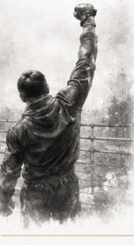
ego dompté. Mais si tu vis l’épreuve de la défaite, comprends qu’elle est toujours accompagnée d’un proche triomphe : « Avec la difficulté vient certes la facilité » (s. 94, v. 5-6).
« Les rounds de la vie s’enchaînent et inscrivent le palmarès de chacun de nous. »
Les rounds de la vie s’enchaînent et inscrivent le palmarès de chacun de nous. Il nous faudra sans cesse chercher la ceinture et jalonner notre histoire de victoires, de grands soirs. Les luttes pour la justice, le poing levé au ciel ; les luttes plus personnelles, les mains levées au ciel. Le croyant se sait victorieux dans chaque situation : « Bienheureux sont les croyants » (s. 23, v. 1), à condition de s’arracher pour le combat, à condition de choisir comme maître Dieu, le Victorieux, à condition de s’engager, sans crainte, sans reculer.
Archives · Mus’2Lyon
Minute de sens : un cœur d’or, une volonté de fer, une âme douce
Par Hamza Braïki
Paru dans Mus’2Lyon, n°2, décembre 2013
C’est avec le fracas du métal que cette minute de sens apparaît, à la mesure de la puissance de Dieu qui fit descendre le fer sur la terre. De la force, il en faut pour l’extraire des tréfonds souterrains. Mais ensuite, que de soulagement lorsqu’on l’utilise comme un outil ou tout ustensile. Cependant, que d’âmes tombèrent d’une lame ou d’un projectile d’acier ! Que de dégâts causèrent les hurlements de fer, avant l’enfer…
Nous sommes tels les métaux, nous enseigne le Saint Prophète. Chacun issu d’une mine de qualité, à ciel ouvert, à cœur ouvert. […] Et c’est ainsi que les meilleurs spécimens sont tels les métaux rares, or, cuivre ou titane. Ils peuvent constituer des alliages de vertus par leurs caractères réformés et généreux.
Les hauts-fourneaux et leurs températures extrêmes purifient le minerai pour le rendre plus apte à servir les hommes dans leur service à Dieu. […] Mais malgré sa solidité, le métal reste malléable, fissurable ou déformable. Il peut survivre à l’épreuve du temps, à condition de conserver sa mémoire de forme, ce qu’il fut à l’origine : quelques paillettes disséminées
dans de l’argile, de l’eau ou de la roche.
Les croyants, lorsqu’ils font fi de leurs divergences, forment une inviolable chaîne, résistant à toute effraction. C’est ainsi lorsque les cœurs sont soudés à chaud et l’assemblage est renforcé. C’est ainsi lorsque l’on brise les chaînes de sa servitude à cette vie, que l’on enlève les clous sur le chemin, que l’on partage l’abri même sous la tôle ondulée, que l’on se soutient à l’usinage de nos caractères.
« Ne dit-on pas de battre le fer tant qu’il est chaud ? »
Après avoir traversé le processus de cette vie, quel sera l’état de ta carrosserie ? La lame de ton âme résistera-t-elle aux chocs métalliques que tu éprouveras à ton ego ? Car les épreuves se présentent pour édifier notre être. Ne dit-on pas de battre le fer tant qu’il est chaud ?
[…] Et puis, par l’attention, la question, tu lubrifieras ton esprit pour lui éviter la corrosion. Et jour après jour, tu te recycleras en faisant acte de repentir. Par une nouvelle fusion, tu détruiras tes impuretés spirituelles et forgeras alors l’or de ton âme dans la masse.
Archives · Mus’2Lyon
L’oraison de l’eau-raison
Par Hamza Braïki
Paru dans Mus’2Lyon, mars 2019
[…] Quoi de plus vivifiant, en période de canicule, qu’une douche fraîche aux gouttelettes diffuses ? Et c’est ainsi que le rappel se manifeste par son effet certainement tonique, alors qu’on se sent étouffés par la chaleur de nos fautes. L’Enfer, parfois si proche, s’éteint sous les flots de miséricorde. La colère, si spontanée, n’est plus rien lorsqu’elle est aspergée. L’insouciance, si confortable, se dissout sous les gerbes des ambitions.
Finalement, nous avons tous à puiser au fond des nappes phréatiques cette science restée pure, à l’abri de l’atmosphère. En atteignant les abysses de la science, à force d’y croire et de se purifier, tout nous paraîtra accessible, y compris les immenses châteaux d’eau prophétiques.
Les caractères qui s’accordent pour viser l’honneur de Dieu comprennent que l’enjeu est de taille mais qu’il réclame un engagement plein. C’est pourquoi l’eau vive du Rappel est délicate à capter. Seulement après des moments de turbulences, tes aspérités n’y résisteront plus. Elles finiront par s’éroder au passage du flot de foi. Ton cœur deviendra un vivier favorable à l’apparition de qualités et cultivera naturellement la paix et la bonté.
Cependant, soyons conscients de ne point tarir les réserves sans les remplir tout autant. Apportons nos contributions au fil de l’eau de la foi, celle qui redonne vie aux moribonds, perdus dans leur existence. Imbibés de piété, étanches aux tentations, il nous faudra recueillir des assoiffés, irriguer leur cœur sans les inonder, et créer cette zone humide si propice à la vie.
Alors nous pourrions nous imaginer, invités pour l’Éternité, autour du bassin Kawthar, sirotant de délicieuses boissons, satisfaits du service divin, ravis de ce destin. Nous pourrions contempler dans ces vastes jardins les nombreux fleuves de foi qui nous
rafraîchiront, peut-être, pour certains, avec une impression de déjà-vu…
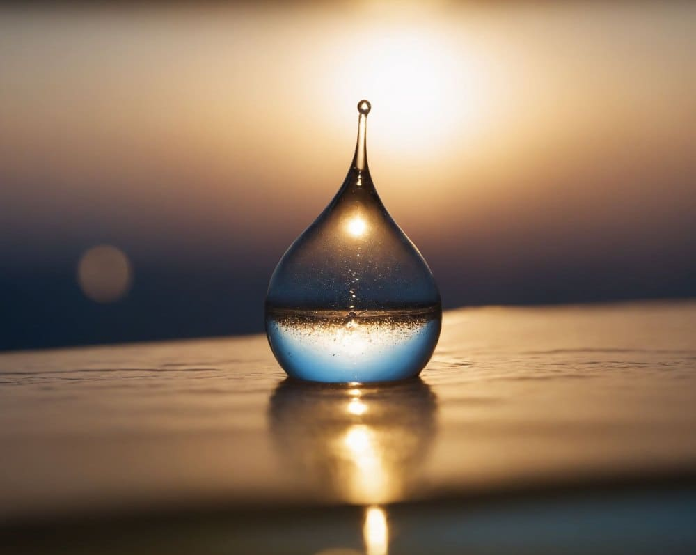
Archives · Mus’2Lyon
Engagez-vous ! qu’il disait…
Par Mehdi Chebaïki
Paru dans Mus’2Lyon, avril 2019
… Mais il ne disait pas que s’engager, c’est recevoir. Recevoir un peu de gratitude mais surtout beaucoup de coups. S’engager, c’est se mettre en danger, c’est proposer un autre monde, une autre vie, d’autres objectifs que ceux de l’air du temps. S’engager, c’est forcément déplaire, car on remet en question un ordre établi, une norme, pour en proposer une autre.
Or beaucoup de gens se complaisent dans la norme, dans un système ; certains en vivent, d’autres en profitent, et certains autres ne se rendent même plus compte qu’ils le subissent.
Oui ! S’engager, c’est bousculer, mais bousculer pour le bien, et quel plus bel exemple que le meilleur des hommes, Muhammad, messager de Dieu. Un engagement d’une vie au service des autres. Un engagement pour le Créateur mais dans l’intérêt des hommes. Avant la révélation, le Prophète était un homme accepté par tous pour sa sagesse, son altruisme et son sens civique, jusqu’à ce que la révélation divine s’offre à lui et qu’il s’engage à la transmettre. Il bouscula alors l’ordre établi et devint un paria, un ennemi au sein même de sa famille, qui lui reprochait simplement de ne pas se contenter de l’existant, de remettre en cause un système de pouvoir et d’innover en matière de religion.
Oui ! L’Islam de Muhammad n’était qu’engagement ! Un engagement pris auprès de Dieu, pour transmettre coûte que coûte la bonne parole. Un engagement auprès des hommes pour organiser une société meilleure, une société dans laquelle l’injuste ne domine pas, dans laquelle le riche ne prive pas le pauvre, où le faible et l’impotent ont des droits que les puissants ne peuvent contenir.
Alors, à une époque où l’on brandit la sunna (tradition prophétique) comme un trophée, mais où les cœurs sont durcis, à une époque où l’on parle plus d’Islam qu’on ne le vit, à une époque où l’inversion des valeurs frappe le monde, y compris, voire surtout, le monde musulman, ne serait-ce pas justement le bon moment de suivre la première des traditions prophétiques et de S’EN-GA-GER !?
Les compagnons passaient-ils des jours, des mois, à s’asseoir autour de gros livres pour étudier une religion théorique ? Ou passaient-ils leur temps avec leurs semblables, à aider, organiser, gérer, développer les sphères publiques : associatif, économique, politique, humanitaire, etc. ?
L’Islam n’est pas une science fondamentale, c’est une science appliquée ! Alors appliquons-la ! Chacun avec ses compétences, chacun avec ses qualités, chacun avec ses moyens, ENGAGEZ-VOUS !
« L’Islam n’est pas une science fondamentale, c’est une science appliquée ! »
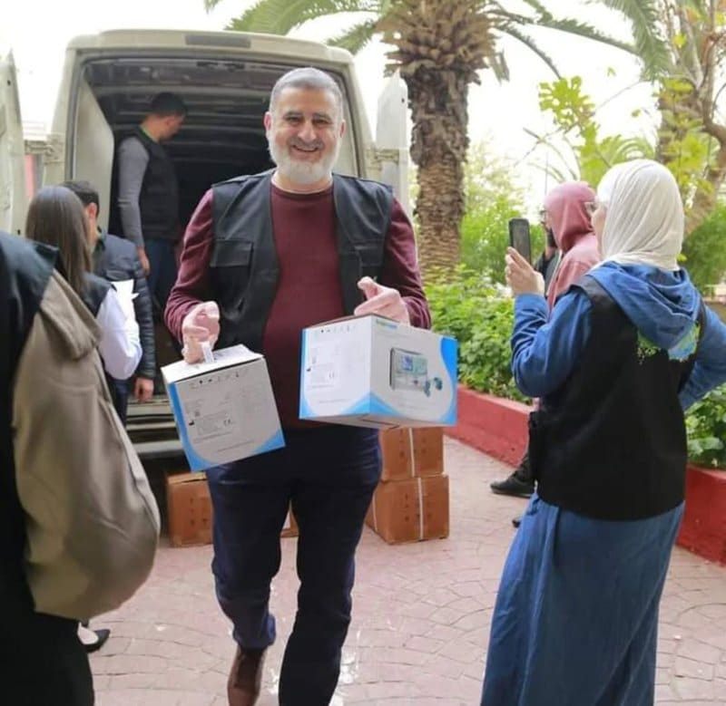
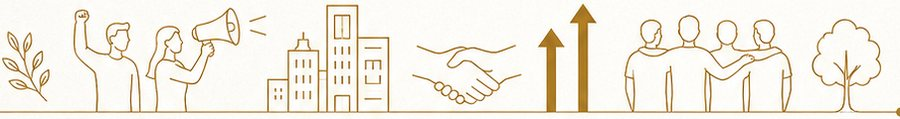
Archives · Mus’2Lyon
La vocation du professeur
Par Turkan, professeure-militante
Paru dans Mus’2Lyon, avril 2019
Professeur. Individu ayant pour vocation d’enseigner et de transmettre son savoir.
Une vocation, un appel donc… mais vers qui ? Vers quoi ? Enseigner et transmettre… mais quel savoir ? Par quels moyens ? Et surtout à quelle fin ? Certaines définitions posent plus de questions qu’elles n’apportent de réponses. Certaines définitions cadenassent l’esprit par leur trop grande évidence. Elles coupent l’élan de la pensée. Elles posent des bornes à l’esprit. Tout semble dit, sans que rien n’ait pu être réellement pensé. Il fallait se méfier des définitions.
Mais qu’était-ce, alors, être professeur ? Une fois libéré du carcan des formules galvaudées, l’esprit se retrouve alors face à l’inconnu d’un horizon qu’il n’avait encore jamais exploré. Il devait alors se faire aventurier, il devait se faire conquérant. Il devait sortir de ses croyances limitantes pour acquérir un savoir libérateur. Un professeur en devenir qui ne saurait répondre de la raison d’être de son métier, n’était-ce pas un comble ?
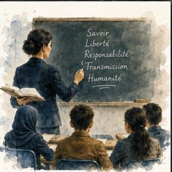
Qu’évoquait donc un professeur pour moi ? Écolière, c’était cette maîtresse qui me faisait découvrir la force de suggestion de la poésie à travers les poèmes de Charles Baudelaire… La rue assourdissante autour de moi hurlait… Lycéenne, c’était ce professeur de philosophie qui m’initiait à des contrées du savoir jusque-là inconnues pour moi. Étudiante, c’était ce directeur de recherche qui m’aidait à faire grandir et mûrir ces idées qui n’étaient qu’à l’état de germe en moi. Qu’était-ce, alors, être professeur ? Un simple transmetteur de savoir ? Non, ces mots étaient trop fades, trop insipides. Ils ne convenaient pas à la réalité intense et colorée de mon expérience vécue. Un guide ? Peut-être. Mais alors en quel sens ? Un professeur n’avait certainement pas pour vocation de dicter une conduite de vie à ses élèves. Et pourtant son influence est indéniable, parfois même salvatrice…
Résonnent alors en moi ces lignes, écrites par un professeur pour ses étudiants : « Mes chers étudiants ! Vous venez à nos cours en exigeant de nous, qui sommes vos professeurs, des qualités de
chef sans jamais songer au préalable que sur cent professeurs, quatre-vingt-dix-neuf n’ont pas et ne doivent pas avoir la prétention d’être des champions de football de la vie ni non plus des “chefs” dans les affaires qui concernent la conduite de notre vie. »1 Un professeur ne peut avoir la prétention de se faire guide de vie. Il ne peut user de son influence pour dicter, du haut de son pupitre, une vision du monde à son audience. Et un étudiant ne peut exiger de son professeur que celui-ci lui offre une vision du monde toute faite, déjà prête à l’emploi. Comment pourrait-il alors se faire lui-même aventurier ? Comment pourrait-il alors aller à son tour à la conquête de nouveaux horizons ?
En quel sens le professeur peut-il alors être guide ? Une lueur de réponse transparaît alors : le professeur apporte d’abord des outils de pensée. Ces outils peuvent être la langue et la poésie d’un Charles Baudelaire, mais aussi des idées et des concepts nouveaux pour initier l’esprit à la conquête de nouveaux horizons, ou encore une méthode pour construire et faire mûrir une pensée logique et structurée. N’était-ce pas cela, enseigner ?
Donner les outils pour apprendre. Ap-prendre, c’est-à-dire prendre à soi et faire sien. Prendre à soi pour s’approprier un savoir et s’en nourrir. Prendre à soi pour devenir soi-même. Prendre à soi pour penser de soi-même. Qu’est-ce donc, être professeur ? Des pistes de réponses s’élèvent dans l’horizon. Offrir à un individu les armes nécessaires afin de se construire une vision du monde structurée et réfléchie. Afin d’avoir une posture intellectuelle, morale et éthique consciente et responsable au sein de la société. Donner à un individu la capacité de décider avec science et conscience de la vision fondamentale du monde qu’il veut adopter, au-delà du carcan des prêts-à-penser emprisonnants.
Tentons-nous alors à une humble proposition de définition, provisoire et non définitive, semblable au répit de l’aventurier qui reprend son souffle dans un refuge provisoire. Professeur. Individu ayant l’intime conviction qu’éduquer consiste à faire croître une liberté.
Alors, en cette fin d’année qui résonne pour beaucoup avec la fin de rudes révisions, voire une échappée, une envolée du milieu scolaire, pensons ensemble à ces professeurs qui jalonnèrent nos parcours scolaires.
1. Max Weber, Le Savant et le Politique, Paris, Union générale d’éditions, 1963.
Archives · Mus’2Lyon
Nous avons tous le droit à l’erreur !
Par Malika Ziri
Paru dans Mus’2Lyon, septembre 2019
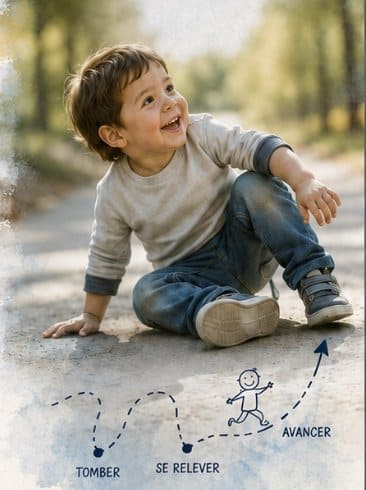
Lorsque nous étions enfants, nous avons tous appris à marcher. Et lorsque nous avons appris, ce n’était pas du premier coup ! Combien de fois sommes-nous tombés avant de marcher ? Des dizaines, des centaines de fois et plus encore !
[…] Pourquoi nous comportons-nous comme si nous devions être parfaits ? Comme si nous devions savoir du premier coup ? Combien de fois ai-je entendu dire « je suis nul(le) » ? Nous sommes-nous donné le droit de ne pas savoir du premier coup ?
Donnons-nous la permission, à nos enfants, aux autres, de se tromper, et d’avancer encore et encore afin qu’ils développent leurs talents potentiels ? Sommes-nous nés ingénieurs, médecins, bilingues ou que sais-je encore ? […]
La notion d’erreur est perçue négativement. Si vous changez cette notion d’erreur par la notion de résultat, vous verrez l’effet positif que cela fait dans votre esprit, à l’image de l’inventeur de la lampe électrique, Thomas Edison, qui a essayé des milliers de fois avant d’atteindre le résultat attendu. S’il avait eu une attitude négative, du style « Je suis nul, je n’y arriverai jamais ! » ou « C’est trop difficile ! », pensez-vous réellement qu’il aurait réussi ? Il aurait essayé peut-être une fois, deux fois, trois fois, mais pas des milliers de fois. Il a réussi grâce à la confiance qu’il avait en lui. Il n’a pas abandonné ! […]
« Tomber n’est pas échouer, c’est apprendre à se relever. »
Cette attitude s’applique dans la vie de tous les jours. Dans tous les apprentissages. Nous apprenons tous ! Nous apprenons à marcher, à manger, à parler, à vivre dans un groupe, à nous faire des ami(e)s. Nous apprenons à lire et à étudier. Nous apprenons un métier. Nous apprenons à faire face à l’adversité. Nous apprenons à nous affirmer. Nous apprenons aussi à vivre en couple. Nous apprenons plus tard à être des parents… […]
Il importe de ne jamais rester au sol pour ne pas sombrer dans le désespoir, dans la négativité. […]
Soyons à l’image de cet enfant qui est ouvert à la vie, qui s’émerveille à chaque fois qu’il apprend, sans jamais désespérer.
Archives · Mus’2Lyon
Marauder…
Par Imane
Paru dans Mus’2Lyon, juillet-août 2019
Marauder, c’est distribuer des repas aux plus démunis. Distribuer en main propre au bénéficiaire et voir en direct le résultat de son acte. Entendre un merci, sentir une poignée de main reconnaissante ou un simple regard qui en dit long et qui réchauffe le cœur.
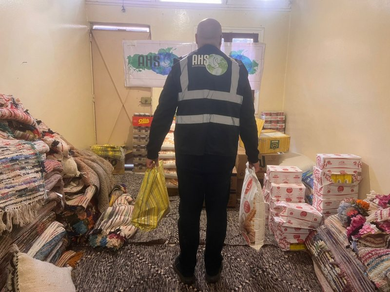
Marauder, c’est passer un moment d’échange avec des gens ignorés à longueur de journée. Leur rappeler qu’ils ont de l’importance et une valeur. Une valeur inestimable que la rue leur a fait oublier, ou que nous leur avons fait oublier ?
Marauder, c’est partager des moments parfois intimes avec des gens inconnus que notre cœur semblait connaître depuis toujours. Comme une évidence. Partager cette chaleur humaine et cet amour dont nous sommes si souvent en manque et en quête perpétuelle dans ce bas monde.
Marauder, c’est faire face à certaines situations difficiles : une femme enceinte au bord de l’accouchement à la rue, une fillette allant à l’école sans cartable, un monsieur en costume-cravate qui dort à même le sol, un homme atteint d’un cancer alternant nuits à l’hôpital et nuits à la rue…
[…] Marauder, c’est aussi apprendre à gérer son temps, le bien le plus précieux. Donner du temps pour autrui, mais ne pas oublier ses obligations premières. Respecter les temps de prière. Partager son temps entre Dieu, soi et les autres.
[…] Aider rend-il accro ? Oui, car, pris dans son élan, on ne peut parfois plus s’en défaire, comme si l’on était chargé d’une mission de vie. Finalement, on donne et on trouve un autre sens à sa vie.
Et bien souvent, on devient soi-même bénéficiaire. Une âme en quête de chaleur humaine et d’amour. De l’amour que l’on retrouve en aidant l’autre. On part avec cette intention d’aider autrui et finalement on reçoit ce qu’on n’espérait plus recevoir. On ressent, au plus profond de son cœur, un apaisement et le sentiment du devoir accompli.
« Marauder, c’est donner beaucoup, mais c’est recevoir bien plus. »
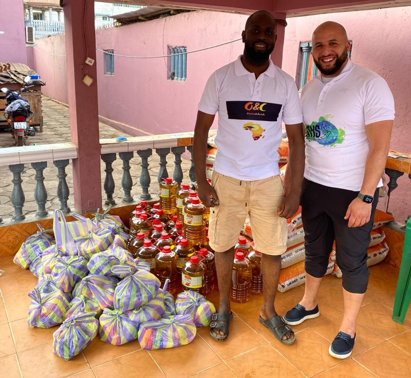
Parfois les intentions se mêlent et on se questionne sur ce qui nous pousse chaque semaine dans cette cause. Quelle est cette intention ? Cherchons-nous à aider l’autre ou bien nous-mêmes ? Cherchons-nous à donner de l’amour ou à en recevoir ? Quelle est notre véritable intention ? Et s’il n’y avait pas de réponses à ces questions, cela changerait-il la valeur de notre engagement ?
Et puis marauder, c’est aussi savoir se « sacrifier », être capable de se priver du « plaisir » que peut apporter la maraude pour faire ce que tout le monde repousse. Participer au nettoyage du matériel pour respecter l’hygiène et la dignité humaine. S’investir dans la logistique. Sacrifier certaines de ses pauses déjeuner pour déposer les courses chez une cuisinière. Manquer des événements pour récupérer des dons. Veiller tard pour rédiger des comptes rendus.
[…] Marauder, c’est donner beaucoup, mais c’est recevoir bien plus. Finalement, je n’ai connu aucune école de vie semblable aux maraudes…
Un hommage à tous les maraudeurs croisés toutes ces années. À tous ces frères et ces sœurs qui, chaque jour, agissent dans l’ombre pour aider leur prochain. Un hommage à toutes ces mains tendues.
« L’exclu à qui l’on tend la main cesse d’être un exclu. »
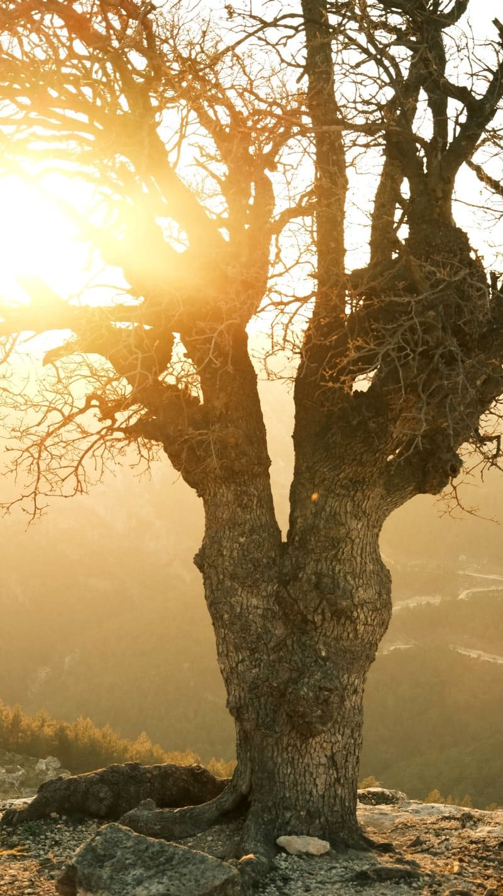
Les Assises de MUSE
Revenir aux racines
Il y a des arbres qui traversent les siècles. Leur tronc s’est tordu sous le vent, leur écorce porte la trace de chaque saison, et pourtant ils tiennent. Ce qui les garde debout ne se voit pas : ce sont leurs racines.
Les Assises de MUSE sont ce temps où l’on s’assoit pour regarder sous la surface. Loin du bruit et des certitudes faciles, on y revient à ce qui nourrit la foi, à ce qui la met à l’épreuve, à ce qui la fait grandir. Chacune et chacun y vient avec ses questions, et c’est très bien ainsi.
Dans ce premier numéro, deux chemins. Le premier part de l’arbre lui-même, de la foi qui s’enracine dans le cœur jusqu’aux fruits qu’elle donne dans nos actes. Le second suit les prophètes dans leurs moments de doute, d’attente et de silence, pour découvrir que la question, parfois, est déjà un pas vers Lui.
Houda El Mahtat
Des siècles debout, face à la lumière. Photo : Hisham Zayadneh / Pexels.
Croire aujourd’hui
Une foi qui porte du fruit
La religion musulmane est à l’image d’un arbre vivant. Les racines représentent la foi : invisibles mais essentielles, elles nourrissent tout l’arbre. Le tronc, les branches et les feuilles représentent les rites pratiques. Les fruits représentent l’aboutissement de la foi : un cœur sain, une âme purifiée et un comportement exemplaire envers Allah et les créatures.
Par Hacene Salmi
Cette vision apparaît dans le célèbre hadith de l’ange Gabriel, venu interroger le Prophète ﷺ sur l’islam (les actes et les cinq piliers), l’îmân (les fondements de la croyance) et l’ihsân (l’excellence), qui consiste à adorer Allah comme si nous Le voyions et, à défaut, à savoir qu’Il nous voit. Ainsi, la foi nourrit la pratique, et la finalité de la pratique est l’élévation spirituelle.
Les racines : connaître Allah
Avant de multiplier les informations religieuses, le croyant doit apprendre à connaître son Seigneur. Allah est l’Unique, le Créateur et le Maître de toute chose. Rien ne Lui ressemble. La sourate Al-Ikhlâs résume cette croyance :
« Dis : Il est Allah, l’Unique. Allah, Celui dont toute la création dépend. Il n’a pas engendré et n’a pas été engendré. Et nul n’est comparable à Lui. »
C’est le cœur du tawhîd, l’unicité d’Allah. Le musulman croit en Allah, en Ses anges, en Ses Livres, en Ses messagers, au Jour dernier et au décret divin. Il peut demander l’aide des hommes dans ce qu’ils sont capables de faire, mais il ne doit pas placer sa confiance absolue dans une créature davantage que dans son Créateur. Plus le croyant connaît Allah, plus il se libère des créatures.
Cette foi ne peut pas reposer uniquement sur une identité culturelle : elle doit être fondée sur une conviction consciente. Elle n’interdit pas les questions ni la recherche ; elle nous apprend à reconnaître les limites de notre connaissance et à accueillir humblement la vérité révélée.
Le Coran rappelle que l’être humain a été créé selon une nature originelle, la fitra : « Dirige donc ton visage vers la religion en pur monothéiste : telle est la disposition naturelle (fitra) selon laquelle Allah a créé les hommes. » (Coran, 30:30) Au fil de la vie, nous accumulons des influences et des habitudes qui nous en éloignent. Il n’est jamais trop tard pour revenir aux fondamentaux : qui est Allah ? Que signifie être musulman ? Quels sont mes repères ?
Le tronc : une foi qui se pratique
Une foi véritable ne reste pas enfermée dans le cœur : elle se traduit par des actes. La prière, le jeûne, la zakat (le partage) et le pèlerinage lui donnent une expression concrète, mais la pratique ne doit pas devenir une simple routine. La prière, censée nous lier à notre Seigneur, devient parfois un moment de distraction ; le jeûne, qui vise le détachement de certains besoins, un mois de gaspillage.
Je sais qu’Allah aime la justice : suis-je juste avec les autres comme j’aimerais qu’ils le soient avec moi ? Je sais qu’Il interdit le mensonge : suis-je honnête dans une situation délicate ? Je sais qu’Il voit mes actes : mon comportement est-il différent lorsque je suis seul ?
Le cœur donne un sens aux actes, et les actes nourrissent à leur tour le cœur. L’islam ne sépare pas la spiritualité du comportement. L’amour et l’espérance poussent à rechercher ce qui plaît à Allah, et la crainte révérencielle éloigne de Sa colère : le croyant ne se croit jamais à l’abri de ses faiblesses, mais il ne désespère jamais de Sa miséricorde.
Les fruits : devenir meilleur
À quoi reconnaît-on un bon arbre ? À ses fruits. Et une foi vivante ? Elle finit par se voir dans la personne : sa manière de parler, sa patience, son honnêteté, son respect des parents, sa façon de traiter son conjoint, ses enfants, ses voisins, ses collègues, et même ceux avec lesquels elle est en désaccord.
Le Prophète a dit : « Les meilleurs d’entre vous sont ceux qui ont le meilleur comportement. » Le sommet de la foi n’est donc pas simplement de savoir davantage, mais de devenir meilleur. Un cœur sain se débarrasse progressivement de l’orgueil, de la haine, de l’envie et de l’hypocrisie, pour se remplir de sincérité, de gratitude, de miséricorde et de confiance en Allah.
Connaître Allah, croire avec certitude, purifier sa fitra, pratiquer avec sincérité, faire de sa foi une source de bon comportement : voilà le chemin qui mène d’une religion simplement connue à une religion réellement vécue.
Les prophètes
Le doute chez les prophètes : du questionnement à la certitude
« Nous sommes plus en droit de douter qu’Abraham. »Muhammad ﷺ
Par Houda El Mahtat
On considère souvent le doute comme le contraire de la foi. Comme s’il fallait, pour croire véritablement, ne plus jamais questionner, ne plus jamais hésiter, ne plus jamais chercher.
Pourtant, le Coran nous présente une réalité bien plus subtile. Chez les prophètes eux-mêmes, il existe des interrogations, des moments d’ébranlement, des douleurs auxquelles aucune réponse immédiate ne vient mettre fin. La foi ne semble donc pas être l’absence de questions, mais la manière dont on continue à avancer malgré elles.
Abraham : quand le cœur cherche à être rassuré
Allah rapporte cette demande d’Abraham (Ibrahim) :
« Seigneur, montre-moi comment Tu redonnes vie aux morts. »
Il dit : « Ne crois-tu donc pas ? »
Il répondit : « Si, certes ! Mais afin que mon cœur soit rassuré. »
Coran, 2:260
Abraham ne demande pas parce qu’il ne croit pas. Il demande parce qu’il veut que son cœur accède à une certitude plus profonde.
Son chemin est d’ailleurs marqué par l’observation et le questionnement. Il regarde ce qui apparaît, ce qui disparaît, et poursuit sa recherche jusqu’à ce que son regard dépasse ce qui est visible.
Une parole du Prophète Muhammad vient alors bouleverser notre représentation de la foi :
« Nous sommes plus en droit de douter qu’Abraham. »
Le doute, lorsqu’il pousse à chercher sincèrement, n’est donc pas nécessairement une rupture avec Allah.
Jacob : quand le chagrin ébranle sans faire disparaître la foi
Puis il y a Jacob (Yaqoub), séparé de son fils Joseph (Youssouf). Le temps passe, mais la douleur ne disparaît pas. Il pleure jusqu’à perdre la vue.
Pourtant, au milieu de cette souffrance, il dit :
« Je ne me plains qu’à Allah de mon malheur et de ma tristesse. »
Coran, 12:86
Jacob nous rappelle une chose essentielle : avoir la foi ne signifie pas être insensible à la douleur.
On peut pleurer, être épuisé, ne pas comprendre ce qui arrive et continuer malgré tout à se tourner vers Allah. La tristesse n’est pas toujours un signe de faiblesse spirituelle. Elle peut simplement être la trace de ce que l’on aime et de ce que l’on a perdu.
Job : quand on ne comprend plus l’épreuve
Avec Job (Ayyoub), l’épreuve atteint une autre dimension. Sa souffrance est immense, et pourtant sa parole reste tournée vers Allah :
« Le mal m’a touché, et Tu es le plus miséricordieux des miséricordieux. »
Coran, 21:83
Il ne prétend pas que tout va bien. Il ne nie pas la douleur. Il la nomme.
C’est peut-être cela aussi, la patience : non pas ne plus souffrir, mais continuer à se tourner vers Allah au cœur même de la souffrance.
Le Coran rapporte d’ailleurs une parole encore plus surprenante au sujet des croyants éprouvés :
« Quand viendra le secours d’Allah ? »
Et la réponse vient :
« Certes, le secours d’Allah est proche. »
Coran, 2:214
Même ceux qui croient peuvent connaître un moment où l’attente devient si longue qu’ils demandent quand viendra enfin le secours.
Muhammad : quand le silence ressemble à un abandon
Le Prophète Muhammad connaît lui aussi des périodes d’une immense épreuve.
Après les premières révélations, il rentre bouleversé de la grotte de Hira. Khadija le rassure et lui
rappelle les qualités qu’elle connaît en lui. Puis vient une période d’interruption de la révélation.
Mais les épreuves ne s’arrêtent pas là. Il perd Khadija, celle qui l’a soutenu dès les premiers instants, puis son oncle Abou Talib, qui constituait un soutien important face aux persécutions de Quraysh. Cette période, marquée par les deuils, les persécutions et l’intensification des épreuves, sera connue comme l’année de la tristesse.
Dans ce contexte, le silence de la révélation pouvait devenir particulièrement lourd. La question n’était peut-être pas : « Allah existe-t-Il ? » mais plutôt : « Allah m’a-t-Il abandonné ? »
Puis vient cette réponse, dans la sourate Ad-Duha :
« Ton Seigneur ne t’a ni abandonné ni détesté. »
Coran, 93:3
Comme si, au cœur du silence, il fallait rappeler que l’absence de réponse immédiate n’était pas une absence d’Allah.
Où mon doute me conduit-il ?
Peut-être que la vraie question n’est finalement pas : « Est-ce que je doute ? »
Mais plutôt : « Où mon doute me conduit-il ? »
Vers la recherche ou vers le renoncement ? Vers Allah ou loin de Lui ? Vers une foi plus consciente ou vers le refus de chercher ?
Les prophètes ne nous montrent pas des hommes qui n’auraient jamais eu besoin de comprendre. Ils nous montrent des hommes qui, même dans l’interrogation, la douleur ou l’attente, continuent de se tourner vers Allah.
Alors peut-être pouvons-nous, nous aussi, dire :
« Ô mon Seigneur, je ne comprends pas tout. Mais je continue de chercher la vérité. Je continue de chercher Ta sagesse. Et je ne ferme pas la porte. »
Parce que parfois, le chemin vers la certitude commence précisément par une question.
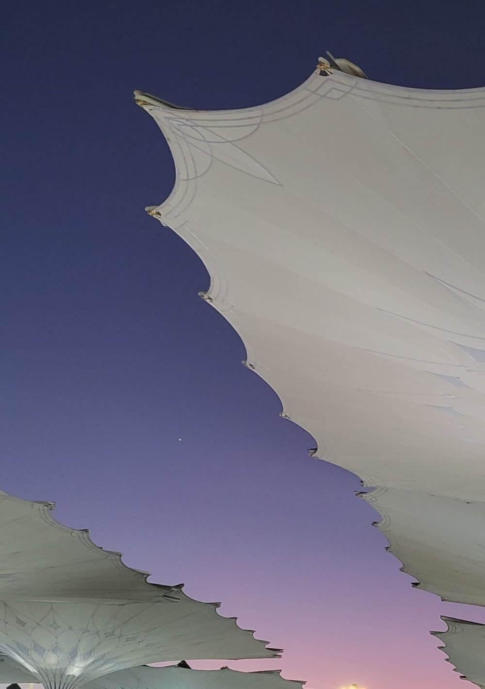
Ce qui apparaît. Une étoile dans le ciel de Médine, à la tombée du jour. © Houda Bouali.
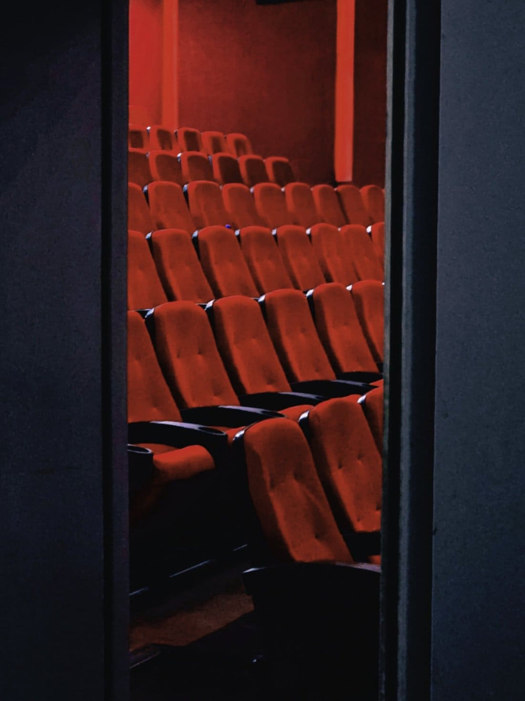
Muse Vibes
Pousser la porte
Muse Vibes, c’est la partie du magazine où l’on sort de chez soi. On pousse la porte d’une salle de cinéma, d’une galerie, d’une prison même, pour rencontrer celles et ceux qui font vivre la culture et la société autour de nous.
Ici, on donne la parole : à un aumônier de prison, à un artiste calligraphe, à une petite fille dont la voix a traversé le monde. Et à vous, surtout, qui avez vos talents et vos réactions à partager.
Installez-vous. La séance commence.
Houda El Mahtat
La salle avant la séance. Photo : Ali Belrhouzy / Pexels.
Face à Muse
Aumônier musulman, serviteur de la foi derrière les murs
Dans le couloir d’un établissement pénitentiaire lyonnais, un homme en claquettes de cuir traverse les grilles avec la même aisance qu’un habitué du quartier. On l’appelle « sheikh ». À 55 ans, il s’habille, plaisante et parle foot comme les détenus qu’il visite chaque semaine. Anouar al Hadi est aumônier musulman depuis 2009. Après la prison de Perrache, aujourd’hui fermée, il poursuit son engagement à Corbas.
Par Chaïma Azzouzi
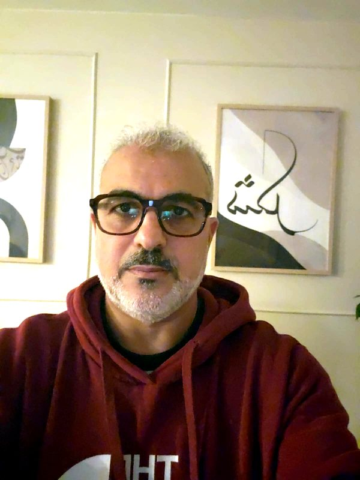
Mais que fait concrètement un aumônier en prison ? Comment le devient-on ? Et que signifie exercer une fonction religieuse dans un lieu où tout, ou presque, est encadré par l’État ? Plongée dans un métier de l’ombre, encore mal connu.
Devenir aumônier : un métier qu’on ne choisit pas seul
En 2008-2009, l’imam de la Grande Mosquée de Lyon propose à Anouar al Hadi, alors salarié dans la logistique, de devenir aumônier. Il accepte, mais doit encore obtenir l’accréditation de l’État. Trois mois d’enquête menés par les services de police avant de pouvoir franchir les grilles.
L’accueil n’est pas immédiat. « On pensait que tu étais un espion », lui lance-t-on à ses débuts. Avec le temps, la méfiance laisse place à la confiance. Anouar dispose aujourd’hui d’un casier personnel dans l’établissement, où il dépose musc, siwak et tapis de prière, financés depuis 2013 par un ancien détenu repenti devenu commerçant.
Un été, une surveillante qui ne l’avait pas reconnu l’interpelle alors qu’il circule en tenue décontractée, le prenant pour un détenu. Un prisonnier s’interpose aussitôt : « Comment tu parles à notre imam ?! » En dix-sept ans, ce genre de méprise reste rare, signe, pour lui, d’un respect construit des deux côtés des grilles.
Dix-sept ans à ce poste lui ont aussi enseigné autre chose : ce qui pousse, au fond, un homme à franchir les grilles dans l’autre sens.
Ce que le métier apprend de la colère
Au fil des années, Anouar al Hadi a identifié deux ressorts principaux à l’enfermement : l’argent facile et la colère. Il rappelle une parole prophétique répétée trois fois par le Prophète Muhammad ﷺ à un homme qui lui demandait conseil : « La takhdhab », « Ne te mets pas en colère. » Une maxime qu’il dit appliquer lui-même et reconnaît volontiers recevoir, lui aussi, des leçons de ceux qu’il accompagne.
Il se souvient d’un jeune homme rencontré au début de son engagement, alors plongé dans le grand banditisme. Après quinze ans d’incarcération, puis cinq ans dans un autre établissement, l’homme le retrouve à La Mecque, pendant les dix derniers jours du Ramadan. Une rencontre qu’il raconte encore avec émotion, comme la preuve que les chemins peuvent se croiser de manière insoupçonnée.
Ces rencontres individuelles racontent une histoire. Mais depuis dix-sept ans, l’aumônier observe aussi, plus largement, ce que la prison dit de la société qui l’entoure.
Un métier à la croisée des mutations de la société
Depuis les grilles, l’aumônier observe les mutations de la société française : l’arrivée de jeunes « harraga » ne maîtrisant pas toujours la langue, une surpopulation carcérale croissante, des cellules prévues pour deux personnes qui en accueillent aujourd’hui quatre.
Dix-sept ans après ses débuts, il résume son métier en une phrase simple : donner ce que personne d’autre ne donne : une écoute sans jugement, un savoir religieux, une présence fidèle. Et recevoir, en retour, parfois des années plus tard, le fruit de ce qui a été semé. Comme cette rencontre à La Mecque le lui a rappelé, une parole, une présence ou un accompagnement peuvent laisser une trace bien au-delà des murs d’une prison.
Et peut-être est-ce là aussi le sens de son engagement : faire le bien, sans toujours savoir où ni quand Allah en fera apparaître les fruits.
Muse & Droit
Voile dans l’espace public : une interdiction est-elle juridiquement possible ?
À l’approche de l’élection présidentielle de 2027, la question de l’interdiction du voile dans l’espace public revient dans le débat politique. Mais au-delà des prises de position, une telle mesure serait-elle juridiquement possible ?
Par Hajar Bouslam Iyoub
Une majorité politique pourrait-elle interdire le voile dans l’espace public ?
Il faut d’abord distinguer le voile intégral, interdit par la loi du 11 octobre 2010, du foulard, le « hijab » qui est un voile laissant le visage découvert.
Depuis la loi du 15 mars 2004, les signes religieux ostensibles sont interdits aux élèves dans les écoles, collèges et lycées publics. Les agents publics sont également soumis au principe de neutralité dans l’exercice de leurs fonctions. Mais dans l’espace public, le principe reste celui de la liberté de manifester ses convictions religieuses.
Une nouvelle loi visant spécifiquement le port du voile de manière générale dans l’espace public se heurterait à plusieurs obstacles juridiques.
Tout d’abord, une telle interdiction devrait respecter les droits et libertés fondamentaux garantis par la Constitution. Son article 1er dispose que :
« La France est une République indivisible, laïque, démocratique et sociale. Elle assure l’égalité devant la loi de tous les citoyens sans distinction d’origine, de race ou de religion. Elle respecte toutes les croyances. »
Constitution, article 1er
Le Conseil constitutionnel est chargé de contrôler la conformité des lois à la Constitution. Une interdiction générale devrait donc être examinée au regard des droits et libertés constitutionnellement garantis, notamment la liberté de conscience et le principe d’égalité.
La voie référendaire ne permettrait pas nécessairement de contourner ces difficultés. L’article 11 de la Constitution limite les matières pouvant être soumises au référendum
et, même si une telle consultation était jugée recevable, la question du respect des droits et libertés constitutionnellement garantis resterait posée.
Autrement dit, une victoire dans les urnes ne donne pas carte blanche : même soutenue par une majorité politique, une loi reste encadrée par des règles qui lui sont supérieures.
« Une victoire dans les urnes ne donne pas carte blanche. »
Enfin, l’article 9 de la Convention européenne des droits de l’homme protège la liberté de pensée, de conscience et de religion. Dans l’arrêt S.A.S. c. France du 1er juillet 2014, la Cour européenne des droits de l’homme a validé l’interdiction française du voile intégral, en admettant notamment l’objectif de préservation des conditions du « vivre ensemble ».
Mais cette affaire concernait une tenue dissimulant le visage. Le hijab laissant le visage découvert, ce raisonnement ne pourrait pas être automatiquement transposé à son interdiction générale. Une telle mesure pourrait donc faire l’objet d’un recours devant la Cour européenne des droits de l’homme.
C’est ainsi que le droit trouve son rôle : protéger les libertés, y compris lorsque leur exercice fait débat.
Muse Éco
Handicap au travail, le quota ne suffit pas
Par Mohamed Barchi
28 % des entreprises de plus de 20 salariés n’emploient encore aucun travailleur handicapé. Pourtant, le mouvement est enclenché : 1,3 million de personnes en situation de handicap étaient en emploi en 2024, soit 100 000 de plus en un an selon l’Agefiph, et le nombre d’apprentis handicapés progresse fortement. Mais avec un taux de chômage qui reste autour de 12 % pour ces mêmes personnes, difficile de parler de réussite collective.
Le vrai sujet est ailleurs. Dans beaucoup d’esprits, le handicap en entreprise se résume encore au fauteuil roulant ou à la canne blanche. Or une grande partie des handicaps sont invisibles : troubles psychiques, maladies chroniques, troubles cognitifs, fatigue invalidante. Combien de salariés sont déjà concernés sans jamais se déclarer, par peur
d’être écartés d’une évolution, d’être stigmatisés ou d’être perçus différemment par leur hiérarchie ?
« Un chiffre à atteindre ne transforme pas une culture d’entreprise. »
La loi impose 6 % de travailleurs handicapés aux entreprises de plus de 20 salariés, une obligation qu’elles peuvent en partie remplir autrement, par une contribution financière ou le recours au secteur protégé. Mais un chiffre à atteindre ne transforme pas une culture d’entreprise. Un employeur recrute d’abord en fonction de ses besoins opérationnels, et c’est légitime. C’est précisément pourquoi l’inclusion se joue moins dans l’obligation que dans l’accompagnement des managers, l’adaptation concrète des postes et la prévention des discriminations : adapter un poste, c’est permettre de juger une compétence plutôt qu’une contrainte.
La question n’est donc pas de savoir comment remplir un quota, mais comment créer un environnement où chacun peut travailler dans de bonnes conditions, sans craindre d’être jugé ou freiné. L’inclusion ne se décrète pas : elle se construit dans la culture managériale, la confiance et les pratiques du quotidien.
Muse-ings
Iqra : le mot d’un seul souffle
Par Houda El Mahtat
Le premier mot de la Révélation n’est ni « crois », ni « prie », ni « obéis ». C’est : « Lis ! »
Et celui à qui il est adressé ne sait pas lire.
Il le dit : « Je ne sais pas lire. » L’ange insiste. Le mot revient, une fois, deux fois, trois fois, comme si la réponse n’avait aucune importance, comme si l’ordre portait sur autre chose que ce que l’on croit.
De quoi s’agit-il, alors ? On attend d’un commencement qu’il dise l’essentiel : une louange, un avertissement, une loi. Or l’essentiel tient dans un geste. Avant toute croyance à défendre, avant tout rite à accomplir, l’islam s’ouvre sur un mouvement de l’esprit.
Ce paradoxe est d’abord une définition de l’être humain. Quelques versets plus loin, la sourate dit de Celui qui a créé qu’Il « a enseigné à l’homme ce qu’il ne savait pas ». L’homme n’y est pas défini par ce qu’il sait, mais par ce qu’il ignore, et par la possibilité qui lui est offerte d’en sortir. Nous opposons volontiers le savoir à l’ignorance, comme deux rives qu’aucun pont ne relierait. Iqra les renverse : l’ignorance n’est pas l’ennemie du savoir, elle en est le seuil. Il faut d’abord reconnaître ce qui nous manque pour que quelque chose puisse nous être donné.
Mais que veut dire lire ? Pas déchiffrer : celui à qui l’on parle n’aurait que faire d’un alphabet. Lire, c’est se laisser adresser une parole et consentir à être transformé par elle. On n’entre pas dans un texte comme on entre dans une pièce que l’on possède, mais comme on entre dans une conversation, en acceptant qu’une autre voix s’installe en nous. Un livre que l’on referme exactement tel qu’on l’a ouvert n’a pas été lu.
« Un livre que l’on referme exactement tel qu’on l’a ouvert n’a pas été lu. »
Cette lecture déborde d’ailleurs les pages. Le Coran appelle « signes », âyât, aussi bien ses versets
que les phénomènes du monde : le ciel, l’alternance des nuits et des jours, le visage de l’autre. Iqra nous demande de lire deux livres à la fois, celui qui est écrit et celui qui est vécu, sans jamais faire de l’un le prétexte pour négliger l’autre.
Qu’en avons-nous fait ? Nous vivons à l’heure où tout se lit vite et se partage plus vite encore : des titres, des extraits, des opinions déjà mâchées. Nous avons accès à presque tout, et pourtant nous cherchons de moins en moins. Nous confondons l’information et la connaissance, comme on confond l’eau qui passe et la source. Iqra nous prend à rebours : lire n’est pas consommer. C’est s’arrêter, regarder, se laisser interroger.
Il y a enfin le sens le plus exigeant, celui qui dérange : ne pas suivre le mouvement. Ne pas tenir une idée pour vraie parce qu’elle est répétée. Ne pas croire parce que tout le monde croit. Le Coran met lui-même en garde contre celui qui suit ce dont il n’a pas connaissance. Allah ne demande ni au croyant ni à la croyante de renoncer à leur intelligence : Il les appelle à la mettre en marche dès les premières paroles de la Révélation. La certitude est un repos ; la connaissance est une marche. Iqra choisit la marche.
Je passe mes journées entre les mots des autres et les miens : à écouter, à écrire, à relire. De ce va-et-vient, je garde une certitude : je n’ai jamais fini de comprendre. Chaque fois que je crois savoir, un mot me ramène à ma place, celle de l’élève. Et si c’était cela, la maturité : non pas savoir davantage, mais savoir mieux ce que l’on ignore ?
Alors je repense à celui qui allait devenir le Messager ﷺ, seul dans la grotte, qui répond qu’il ne sait pas. Cette réponse n’était pas un échec. C’était le meilleur point de départ possible.
Avant de transmettre, il a fallu recevoir. Avant d’enseigner, apprendre.
Ce soir-là, dans la grotte, il n’a pas su lire.
Il a commencé à apprendre.
Tout le reste en découle.
Culture Muse · Cinéma
Hind Rajab : la voix qui ne s’éteint jamais
Par Chaïma Azzouzi

Le 29 janvier 2024, le Croissant-Rouge palestinien reçoit un appel depuis Gaza. Au bout du fil, une fillette de six ans, seule dans une voiture sous les tirs, plusieurs membres de sa famille tués autour d’elle. Elle s’appelle Hind Rajab. Pendant près d’une heure, les opérateurs tentent de la rassurer et d’envoyer une ambulance.
Plus d’un an plus tard, cet appel est devenu un film. Dans La Voix de Hind Rajab, la réalisatrice tunisienne Kaouther Ben Hania ne reconstitue pas la mort de l’enfant à l’écran. Elle fait un choix plus dur : nous faire entendre l’appel, et nous laisser dans l’attente avec elle. Présenté à la Mostra de Venise en septembre 2025, le film y reçoit le Lion d’argent, Grand prix du jury, avant de représenter la Tunisie aux Oscars 2026 dans la catégorie du meilleur film international.
« Elle fait un choix plus dur : nous faire entendre l’appel, et nous laisser dans l’attente avec elle. »
Une voix, et l’impuissance de ceux qui écoutent
Hind n’est pas interprétée par une enfant, son visage n’est jamais montré. Seule sa voix, réelle, occupe l’écran. Le spectateur ne peut se réfugier ni derrière un acteur, ni derrière une reconstitution : il reste une voix, un téléphone, et des adultes qui essaient de sauver une enfant qu’ils ne peuvent pas atteindre.
C’est là tout le nœud du film : l’impuissance. Celle des opérateurs du Croissant-Rouge, qui multiplient les appels sans pouvoir faire avancer l’ambulance plus vite que la situation sur le terrain ne le permet. Ils ont une voix, des consignes, de l’expérience mais pas le pouvoir d’agir directement sur ce qui se joue à quelques kilomètres d’eux. Ce décalage entre la volonté d’aider et l’incapacité de le faire est ce que le film donne à ressentir, minute après minute, plutôt qu’à voir.
« C’est là tout le nœud du film : l’impuissance. »
Kaouther Ben Hania a expliqué avoir découvert cet enregistrement en travaillant sur un autre projet, et l’avoir abandonné après avoir écouté l’appel dans son intégralité. Elle a ensuite rencontré la mère de Hind ainsi que les opérateurs présents ce jour-là.
« C’est toi que nous implorons secours »
Une scène résonne particulièrement : une opératrice propose à Hind de réciter avec elle Al-Fatiha, la première sourate du Coran récitée chaque jour, dans la prière, par des millions de musulmans. Pas de discours, juste une enfant terrorisée et une voix qui tente de l’apaiser avec les mots les plus familiers qui soient.
Le verset « C’est Toi (Seul) dont nous implorons secours » prend, dans ce contexte, un poids particulier : une enfant qui demande justement qu’on vienne la secourir, et des adultes qui ne peuvent lui répondre qu’avec des mots, faute de pouvoir agir plus vite.
Les voix des opérateurs tremblent, se cassent, n’arrivent plus à masquer l’horreur de ce qu’ils entendent. Certains prient à voix haute, comme si les mots pouvaient suppléer à l’ambulance qui n’arrive pas. D’autres pleurent ouvertement, sans chercher à s’en cacher. Il y a des cris, de rage et d’impuissance mêlées, contre des lignes téléphoniques qui coupent, contre des minutes qui filent, contre l’absence totale de contrôle sur ce qui est en train de se jouer. Ce ne sont plus des professionnels qui gèrent une urgence : ce sont des êtres humains qui s’effondrent en direct, incapables de faire autre chose qu’écouter une enfant de six ans mourir au bout du fil.
Une reconnaissance qui n’efface rien
Le film reçoit ensuite le prix du public à Saint-Sébastien, le Grand Prix à Gand et une nomination aux Golden Globes puis aux Oscars 2026. Mais c’est un autre geste qui marque : en février 2026, recevant le prix Most Valuable Film au gala Cinema for Peace à Berlin, Kaouther Ben Hania laisse son trophée sur scène après avoir appris qu’un général israélien était distingué le même soir, et appelle à la justice pour Hind.
Ne pas devenir indifférent
Le Coran rappelle : « quiconque sauve une vie, c’est comme s’il avait sauvé l’humanité entière » (Sourate Al-Mâ’idah, 5:32). Face à Hind, la question posée par le film n’est pas
seulement celle de sa mort, mais celle de notre capacité à encore ressentir quelque chose face à des vies réduites à des statistiques.
Hind avait six ans. Elle appelait pour qu’on vienne la chercher. Sa voix n’a pas pu être sauvée, mais elle peut encore être entendue.
Culture Muse · Vernissage
Asetik’Art : l’art de retirer pour mieux ressentir
Du 23 septembre au 23 octobre, Nord’IN Morrakoshy expose une soixantaine de toiles à l’Alliance Française, au 11 rue Pierre Bourdan à Lyon. Une plongée dans un art minimaliste où la sobriété devient langage et où chaque œuvre laisse le spectateur libre d’interpréter.
Par Iness El Jebbari
C’est un artiste aux mille visages. Commerçant, cuisinier, imam et figure associative du quartier : Nord’IN Morrakoshy, de son état civil Nour Eddine M’rakchi Kadouimi, cultive depuis plus de trente ans une passion qu’il gardait discrète. « Hamza, un ami présent au vernissage, me connaît depuis au moins quinze ans et il ne savait pas », s’amuse-t-il. Son art, il le définit comme un exutoire, un art pour s’exprimer avant tout, loin du marché de l’art.
L’intérieur comme source
Sa démarche est singulière : elle va de l’intérieur vers l’extérieur. « Les autres, leur démarche, c’est l’extérieur qui les nourrit. Moi, je suis nourri par l’intérieur. » Il ne reproduit pas un arbre, un nuage ou un coucher de soleil. Il part d’une réflexion, d’une sensation, puis la matérialise. « La chose est repensée en moi. Elle n’existe pas en dehors de moi. »
Cette approche, il la résume en une phrase : « La simplicité pour mieux faire parler l’émotion. » Loin de la surcharge, il privilégie l’épure.
160 versions d’un prénom
Le cœur de son travail ? Le prénom Mohamed ﷺ, écrit en lettres arabes. Il en a réalisé 160 versions. Chaque toile est construite uniquement avec ces lettres, déformées, retournées, pleines ou vides. Un fœtus lové dans un œuf, relié par un cordon ombilical. Une pluie de points noirs qui, à y regarder de plus près, sont autant de lettres « mim ». Un footballeur en pleine action, né de la seule combinaison des lettres du prénom. Une silhouette, une foule, un public de spectacle : tout est fait de Mohamed.
« C’est la même matière, mais ce n’est pas le même résultat. Entre les deux, il y a un travail de modelage : au lieu de modeler avec les
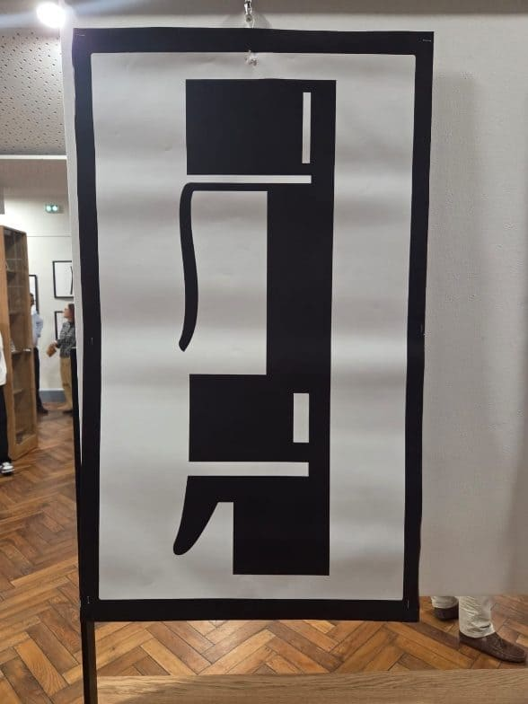
mains, on modèle avec l’esprit. » Le processus est long, fait d’essais et d’itérations. « Pour arriver à faire un footballeur avec un prénom, il faut des étapes. C’est compliqué de trouver les lettres. »
Cette série, intitulée « les Mouhamadiette », a été présentée à Essaouira cet été, avec une collection de 160 œuvres. À Lyon, il en a amené 63, mais toutes ne sont pas rentrées dans l’espace. Le choix a été fait avec Nathalie, curatrice de la galerie.
La sobriété comme réponse au monde
Pourquoi choisir l’épure à une époque saturée d’images ? « L’ascétisme appelle et rappelle aux gens que l’essentiel est dans le peu, pas dans le beaucoup. » Il ne s’agit pas d’opposer richesse et pauvreté, mais de revenir à l’essentiel.
Il cite le Prophète et Omar (que Dieu l’agrée), dont la force était intérieure, pas extérieure. Et d’ajouter : « Le monde est en chaos parce qu’il est démesuré. »
Un art engagé et pédagogique
L’exposition à Lyon a été pensée en fonction du lieu. Avec Nathalie, l’artiste a sélectionné des œuvres qui parlent aux élèves et peuvent servir de support pédagogique. « À Tanger, des professeurs d’art amenaient les enfants à la galerie parce qu’ils avaient compris qu’avec trois lettres, on pouvait créer toutes ces images. » L’objectif : encourager les jeunes à s’exprimer à travers leur héritage culturel. « Les professeurs vont s’en emparer pour avoir du matériel pédagogique. »
L’impact appartient au spectateur
Une fois l’œuvre exposée, l’artiste ne contrôle plus rien. « Une fois qu’il est dévoilé, l’impact, ce n’est pas moi qui le contrôle. C’est entre le spectateur et l’œuvre. » Certains visiteurs viennent sans rapport avec la spiritualité, intéressés par la technicité, la dextérité de la langue arabe. D’autres repartent avec des questions. « Il y a des œuvres
où je ne trouve pas la réponse. C’est impressionnant. »
« Aucun prénom ne m’inspire autant que Mohamed », s’émerveille l’artiste. Une invitation à prendre le temps d’observer, de ressentir et d’interpréter, sans qu’une lecture unique soit imposée.
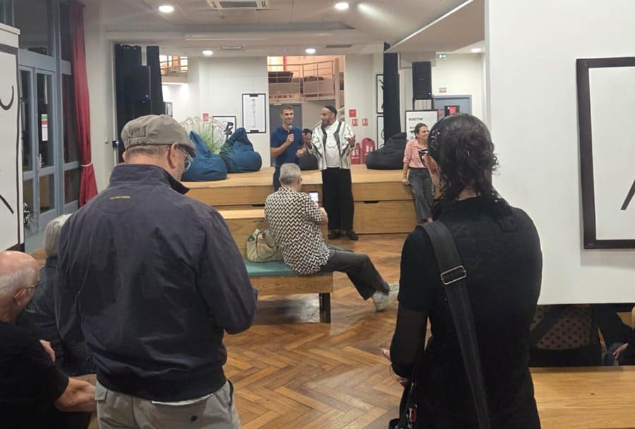
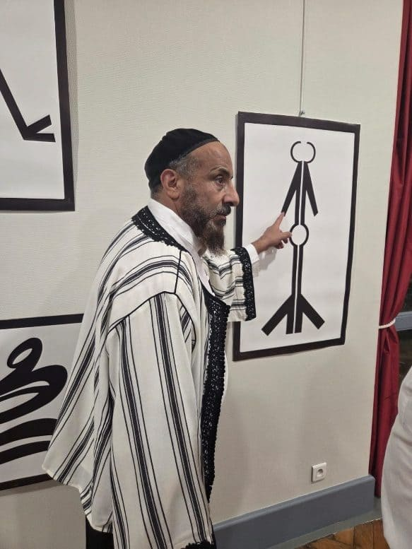
Muse ton avenir
Votre engagement mérite une vraie place dans votre CV
On hésite souvent à écrire « bénévole » sur un CV, par modestie ou par crainte que cela ne compte pas. C’est pourtant une expérience à part entière, qui montre ce qu’un diplôme ne dit pas : l’initiative, la fiabilité, le sens du collectif.
1Traduisez vos missions en compétences. Organiser un événement, c’est de la gestion de projet. Animer un groupe de jeunes, c’est du leadership et de la pédagogie. Tenir la caisse d’une association, c’est de la rigueur et de la confiance.
2Chiffrez et précisez. « 30 bénévoles coordonnés », « 200 participants accueillis », « 2 ans d’engagement » parlent plus qu’un simple intitulé.
3Donnez-lui sa place. Une section « Engagement associatif » bien visible, avec la même présentation que vos emplois : structure, rôle, dates, réalisations.
Une ressource utile : le Passeport Bénévole de France Bénévolat, un livret personnel pour noter vos missions et les compétences acquises. Il peut appuyer votre CV ou une démarche de VAE. À demander à un centre France Bénévolat (francebenevolat.org).
Muse ton avenir : ce que vous avez donné vous construit aussi.
Par Iness El Jebbari
Muse à vous
Vos réactions, vos coups de cœur
À propos de l’article « Le ring de la vie », tiré des archives Mus’2Lyon
« Je l’ai fait lire à mon fils de 16 ans, et il a accroché tout de suite. Le style est dynamique, la mise en page avec les gants et la silhouette façon Rocky donne envie de lire. »
Nadia, 45 ans, Vénissieux« J’ai adoré l’image du Prophète en coach : simple, vivante, et ça rend la spiritualité très concrète. Le texte date de 2013 et n’a pas pris une ride. »
Karim, 41 ans, Lyon 8eAMUSEz-vous : MUSE cherche vos talents
Vous écrivez, vous photographiez, vous avez une idée à défendre ou un regard à partager ? MUSE est aussi la vôtre.
Une photo prise au détour d’une rue, un poème gardé dans un carnet, une nouvelle, un billet d’humeur, une tribune, un dessin… Il n’y a pas de petit talent. MUSE veut faire découvrir de nouvelles plumes et de nouveaux regards, et offrir à celles et ceux qui n’osent pas encore une première page où se révéler.
Régulièrement, la rédaction choisira une ou plusieurs contributions pour les publier dans ces pages. Chaque auteur ou autrice sera contacté avant toute publication : rien ne paraîtra sans votre accord. Votre création sera accompagnée de quelques lignes pour vous présenter, parce qu’un talent, c’est d’abord une personne.
Et qui sait ? Certaines et certains d’entre vous rejoindront peut-être la rédaction. MUSE grandit avec celles et ceux qui la lisent.
« Quelle rubrique attendez-vous le plus dans MUSE, et que voudriez-vous y lire ? »
Répondez-nous : votre réponse pourra paraître dans le prochain numéro.
La communauté MUSE
Les branches
Si MUSE est un olivier, voici celles et ceux qui en sont les branches.
Hamza Braïki
Ingénieur industriel au service des lettres, je m’a-MUSE à forger, tel un orfèvre, les tournures et les concepts.
Houda El Mahtat
Écrivaine et psychothérapeute, j’ai appris à écouter avant d’écrire. Chez MUSE, je fais de la place à toutes les voix.
Assia El Aoudati
Curieuse de tout ce qui nous entoure, je lis pour comprendre, j’écris pour réfléchir et je partage pour échanger.
Iness El Jebbari
Chez MUSE, je mets en lumière les initiatives culturelles, artistiques et militantes qui font bouger les lignes.
Hacene Salmi
Soucieux de comprendre l’islam et ses défis dans le contexte français, de le transmettre et de le rendre vivant à travers sa mise en application.
Hajar Bouslam Iyoub
Chez MUSE, je décrypte l’actualité et le droit, sans détour ni langue de bois.
Chaïma Azzouzi
Entre histoire, écriture et publicité, j’aime raconter des histoires qui interpellent et donnent à réfléchir.
Mohamed Barchi
Chez MUSE, j’analyse l’actualité économique et les enjeux de l’emploi avec un regard libre, direct et sans détour.
Un magazine pour les lectrices et les lecteurs qui prennent le temps : culture, société, spiritualité. Ce numéro 0 n’est qu’une première page. Les suivantes s’écriront aussi avec vous.
N°0 · Octobre 2026 · Gratuit